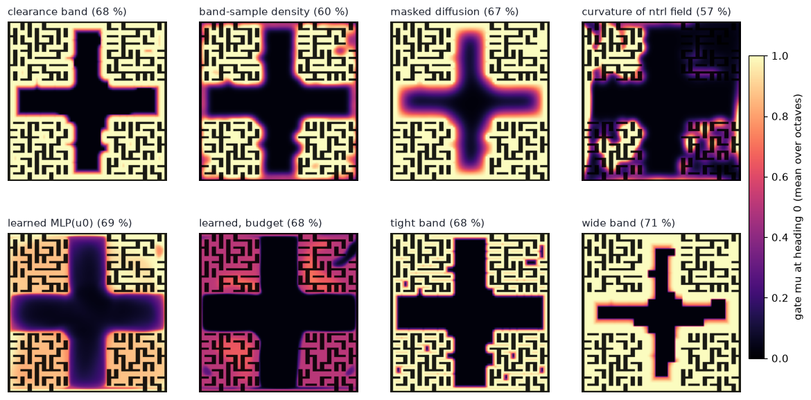
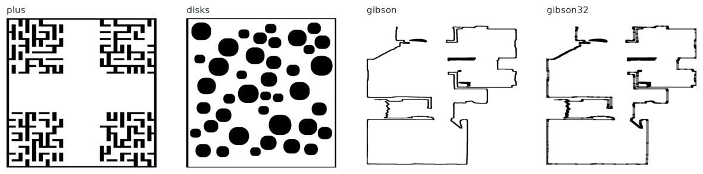
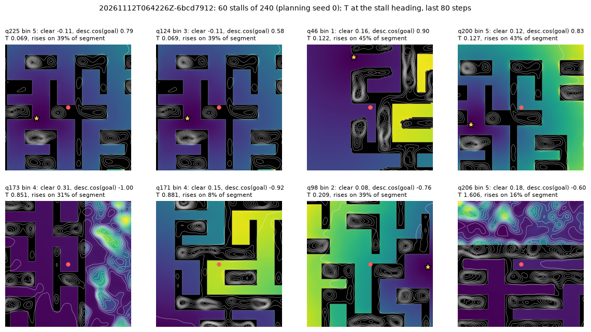
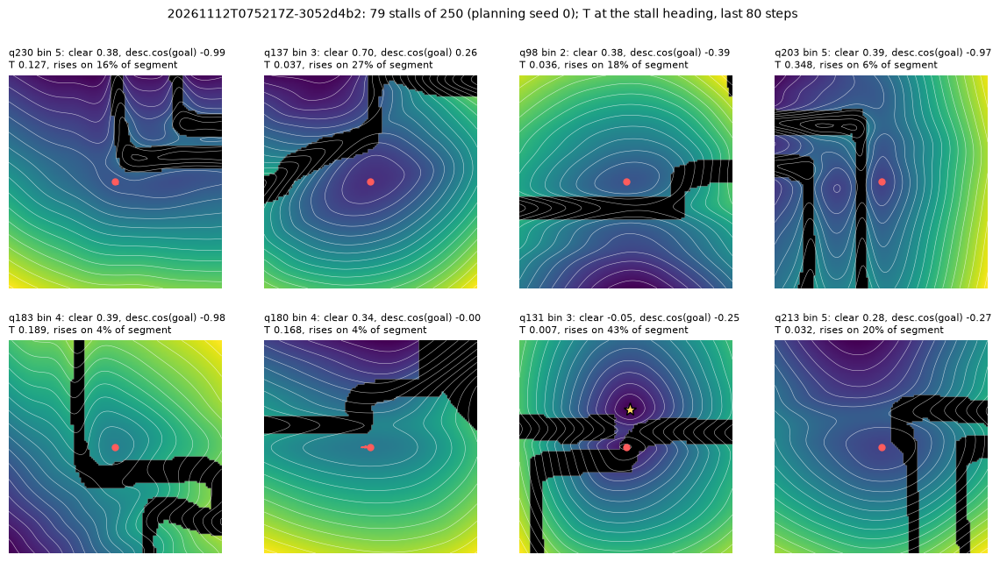

<title>2026-11-12 Embedding-space warp</title>
<meta name="claude:viewport-fit-sides" content="cover">
<style>
/* layout: one reading column, charts full width of it, figures edge to edge inside it */
:root{--bg:#f6f5f1;--surface:#ffffff;--fg:#1d1f24;--muted:#5d6068;--rule:#dcd9d0;--accent:#1c5cab;--chip:#e9e6dd;
 --s1:#2a78d6;--s2:#eb6834;--s3:#1baf7a;--s4:#eda100;--s5:#e87ba4;--s6:#6250d6;--ok:#1baf7a;--wall:#e34948;--stall:#b9b4a6;
 --display:"Source Serif 4",Georgia,"Times New Roman",serif;--body:"IBM Plex Sans","Helvetica Neue",Arial,sans-serif;--mono:"IBM Plex Mono",Menlo,Consolas,monospace}
@media (prefers-color-scheme: dark){:root:not([data-theme="light"]){--bg:#15171b;--surface:#1e2127;--fg:#ecebe6;--muted:#a9adb6;--rule:#343842;--accent:#86b6ef;--chip:#2a2e36;
 --s1:#3987e5;--s2:#d95926;--s3:#199e70;--s4:#c98500;--s5:#d55181;--s6:#9085e9;--ok:#199e70;--wall:#e66767;--stall:#6b6f78;color-scheme:dark}}
:root[data-theme="dark"]{--bg:#15171b;--surface:#1e2127;--fg:#ecebe6;--muted:#a9adb6;--rule:#343842;--accent:#86b6ef;--chip:#2a2e36;
 --s1:#3987e5;--s2:#d95926;--s3:#199e70;--s4:#c98500;--s5:#d55181;--s6:#9085e9;--ok:#199e70;--wall:#e66767;--stall:#6b6f78;color-scheme:dark}
body{background:var(--bg);color:var(--fg);font-family:var(--body);line-height:1.5;font-size:16px;padding-left:max(16px,env(safe-area-inset-left,0px));padding-right:max(16px,env(safe-area-inset-right,0px));padding-block:0 48px}
main{max-width:860px;margin:0 auto}
h1,h2,h3{font-family:var(--display);text-wrap:balance;line-height:1.15}
h1{font-size:2.1rem;margin:40px 0 6px;font-weight:600}
h2{font-size:1.45rem;margin:44px 0 10px;font-weight:600}
h3{font-size:1.1rem;margin:26px 0 6px;font-weight:600}
p,li{max-width:68ch}
.eyebrow{font-family:var(--mono);font-size:.78rem;letter-spacing:.08em;text-transform:uppercase;color:var(--muted);margin-top:28px}
.lede{font-size:1.12rem;max-width:66ch}
.verdict{display:grid;grid-template-columns:repeat(auto-fit,minmax(190px,1fr));gap:12px;margin:22px 0 8px}
.tile{background:var(--surface);border:1px solid var(--rule);border-radius:8px;padding:12px 14px}
.tile .n{font-family:var(--display);font-size:1.9rem;font-weight:600;font-variant-numeric:tabular-nums;line-height:1.1}
.tile .l{color:var(--muted);font-size:.86rem;margin-top:4px}
.chart{width:100%;height:auto;display:block;margin:10px 0 4px}
.chart .grid{stroke:var(--rule);stroke-width:1}
.chart .tick{fill:var(--muted);font-size:11px;font-family:var(--mono)}
.chart .lab{fill:var(--fg);font-size:12px}
.chart .val{fill:var(--fg);font-size:11px;font-family:var(--mono)}
figure{margin:18px 0}figure img{display:block;max-width:100%;border-radius:6px;border:1px solid var(--rule)}
figcaption{color:var(--muted);font-size:.88rem;margin-top:6px;max-width:72ch}
.cap{color:var(--muted);font-size:.88rem;max-width:72ch;margin:0 0 14px}
code{font-family:var(--mono);font-size:.86em;background:var(--chip);padding:1px 5px;border-radius:4px}
pre{font-family:var(--mono);font-size:.84rem;background:var(--surface);border:1px solid var(--rule);border-radius:6px;padding:12px 14px;overflow-x:auto}
details{margin:12px 0;border:1px solid var(--rule);border-radius:8px;background:var(--surface)}
summary{cursor:pointer;padding:10px 14px;font-weight:600}
details>div{padding:0 14px 14px;overflow-x:auto}
table{border-collapse:collapse;font-size:.84rem;font-variant-numeric:tabular-nums;min-width:600px}
th,td{padding:5px 8px;border-bottom:1px solid var(--rule);text-align:right;white-space:nowrap}
th:first-child,td:first-child,th:nth-child(2),td:nth-child(2){text-align:left}
td.ids{font-family:var(--mono);font-size:.72rem;white-space:normal;max-width:260px}
.legend{display:flex;flex-wrap:wrap;gap:10px 18px;font-size:.86rem;color:var(--muted);margin:4px 0 10px}
.legend span::before{content:"";display:inline-block;width:12px;height:12px;border-radius:3px;margin-right:6px;vertical-align:-1px;background:var(--c)}
.two{display:grid;grid-template-columns:repeat(auto-fit,minmax(300px,1fr));gap:16px}
.two>div{min-width:0}
a{color:var(--accent)}
.note{border-left:3px solid var(--accent);padding:4px 14px;margin:14px 0;color:var(--fg)}
@media (prefers-reduced-motion: reduce){*{scroll-behavior:auto}}
</style>
<link rel="stylesheet" href="https://fonts.googleapis.com/css2?family=Source+Serif+4:wght@600&family=IBM+Plex+Sans:wght@400;600&family=IBM+Plex+Mono&display=swap">
<main>
<p class="eyebrow">jeffrey/embed_warp · ntrl-demo metric fields · 2026-11-12</p>
<h1>Warping the embedding instead of the maze</h1>
<p class="lede">Every earlier warp moved the C-space coordinates before ntrl-demo's Fourier encoder, and a map of a 3-D space can only stretch a region by stretching it more along some direction than others. Here the coordinates stay put and a diffeomorphism acts on the <em>embedding</em>: ntrl-demo's 128 Fourier rows are split into base rows and octaves at 2, 4, 8 (16) times their frequency, and a coupling layer Ψ(u₀, u₁, …) = (u₀, μ₁(u₀)u₁, …) opens the octaves where travel time should be high and closes them in the open. The induced metric is an isotropic stretch λ(x) plus one small rank-one term; measured anisotropy at the walls is 1.00.</p>
<p class="lede"><b>What came out.</b> The isotropic multi-scale embedding is the part that works. Whitened octaves at ×2, ×4, ×8 with no gate at all (<code>oct8</code>) reach 79.3 % on the held-out 1,200 plus-maze queries over three training seeds against ntrl-demo's 68.4 %, level with the hand-constructed warp of the earlier study (80.1 %) without any warp, and 93–97 % on the disks against 84 %. Every gated variant also beats the control there (clearance gate ×2..×16 74.3 %, learned gate 72.8 %, clearance gate ×2..×8 73.6 %, three seeds each), but none beats the ungated ×2..×8 set: the gate earns its keep only when the octaves go too high (at ×16 the always-on control falls to 68.8 % and the gates hold 73–74 %). The learned gate rediscovers the geometry by itself from the travel-time loss. Every octave field has far sharper walls (runs that arrived through a wall 299 → 96–197 of 2,160 on the 240-set) and trades them for stalls at thin walls whose far-side value the loss never constrains. On the Gibson apartment (64 and 32 cells, three seeds at 32) nothing changes: its failures are far-field sinks in rooms.</p>
<div class="verdict"><div class="tile"><div class="n">79.3 %</div><div class="l">plus maze, held-out 1,200 queries, octaves x2,x4,x8 without a gate (ntrl-demo 68.4 %), 3 seeds</div></div><div class="tile"><div class="n">95.7 %</div><div class="l">disks, learned gate (ntrl-demo 83.9 %)</div></div><div class="tile"><div class="n">299 → 104</div><div class="l">plus-maze runs that arrived through a wall, ntrl-demo → clearance gate</div></div><div class="tile"><div class="n">68.4 %</div><div class="l">Gibson apartment at 64 cells, clearance gate (ntrl-demo 66.5 %)</div></div></div>
<p class="cap">Success = MPPI plan (ntrl-demo's planner, planning seeds 0/1/2) that arrives within tolerance and keeps the exact robot clearance non-negative along the whole path. Per-seed values are shown as dots on the bars; one training of the same recipe moves by about 3–5 points, so single-seed differences below that are noise.</p>
<h2>1. The map</h2>
<p>ntrl-demo's travel time is T(x₀, x₁) = metric(enc(γ(x₀)), enc(γ(x₁))) with γ(x) = [sin 2πBx, cos 2πBx] ∈ R²⁵⁶. The encoder is Lipschitz in γ (row-normalized weights, sine activations), so the rate at which T can change along a direction of the C-space is set by the arc length the embedding has there: the Gram matrix JᵀJ of J = dγ/dx, which for random rows is (2π)²·128·σ²·I, the same in every direction and everywhere.</p>
<p>The new embedding keeps the architecture (656,900 parameters) and reassigns rows: 128 − K·m base rows at ntrl-demo's frequency, K octaves of m rows (whitened, so each octave's Gram is exactly a multiple of I) at scales 2, 4, 8 (16). The map of the embedding space is a coupling layer, triangular with a positive diagonal, hence a diffeomorphism for any smooth gate μ:</p>
<pre>Γ(x) = (γ₀(x), γ₁(x), …, γ_K(x))            Ψ(u₀, u₁, …, u_K) = (u₀, μ₁(u₀)·u₁, …, μ_K(u₀)·u_K),   μ_k ∈ [μ_min, 1]

JᵀJ = g₀ + Σ_k μ_k² g_k + Σ_k m |∇μ_k|² n nᵀ        g_k = (2π)² B_kᵀB_k = c_k·I  (whitened);  the cross terms J_kᵀγ_k vanish exactly

stretch λ(x) = sqrt(1 + Σ_k μ_k(x)² m σ_k² / (128 σ₀²))   isotropic;  the rank-one term along ∇μ is small when the gate changes over more than an octave wavelength</pre>
<p>Where the gate is open (near obstacles) the network sees λ times the arc length per unit of C-space in every direction; where it is closed the octaves collapse to μ_min and the network sees ntrl-demo's own low frequencies, so nothing aliases in the open, which is what sank the uniform magnifications (B × s) and the compressing warps of the earlier studies.</p>
<details><summary>Measured metric the network sees (central differences of the full input mapping, 4,096 poses each)</summary><div><p class="cap">Stretch = sqrt(trace JᵀJ / trace J₀ᵀJ₀) relative to ntrl-demo's features; anisotropy = sqrt(λ_max / λ_min) of JᵀJ. Band = held-out near-wall poses, open = clearance ≥ 2 cells. For comparison the constructed C-space warp of the gap study had anisotropy 6 in the band arms.</p><table><thead><tr><th>scene</th><th>method</th><th>band stretch</th><th>band aniso</th><th>open stretch</th><th>open aniso</th></tr></thead><tbody><tr><td>plus</td><td>ntrl-demo</td><td>1.00</td><td>1.124</td><td>1.00</td><td>1.124</td></tr><tr><td>plus</td><td>octaves always on</td><td>7.43</td><td>1.002</td><td>7.43</td><td>1.002</td></tr><tr><td>plus</td><td>clearance gate (x2..x16)</td><td>7.43</td><td>1.002</td><td>0.69</td><td>1.348</td></tr><tr><td>plus</td><td>clearance gate (x2..x8)</td><td>3.76</td><td>1.010</td><td>0.74</td><td>1.298</td></tr><tr><td>plus</td><td>learned gate</td><td>7.41</td><td>1.002</td><td>0.73</td><td>1.317</td></tr><tr><td>disks</td><td>ntrl-demo</td><td>1.00</td><td>1.124</td><td>nan</td><td>nan</td></tr><tr><td>disks</td><td>octaves always on</td><td>7.43</td><td>1.002</td><td>nan</td><td>nan</td></tr><tr><td>disks</td><td>clearance gate (x2..x16)</td><td>7.43</td><td>1.002</td><td>nan</td><td>nan</td></tr><tr><td>disks</td><td>clearance gate (x2..x8)</td><td>3.76</td><td>1.010</td><td>nan</td><td>nan</td></tr><tr><td>disks</td><td>learned gate</td><td>7.42</td><td>1.002</td><td>nan</td><td>nan</td></tr><tr><td>gibson</td><td>ntrl-demo</td><td>1.00</td><td>1.124</td><td>1.00</td><td>1.124</td></tr><tr><td>gibson</td><td>octaves always on</td><td>7.43</td><td>1.002</td><td>7.43</td><td>1.002</td></tr><tr><td>gibson</td><td>clearance gate (x2..x16)</td><td>7.43</td><td>1.002</td><td>0.69</td><td>1.348</td></tr><tr><td>gibson</td><td>clearance gate (x2..x8)</td><td>3.76</td><td>1.010</td><td>0.74</td><td>1.298</td></tr><tr><td>gibson</td><td>learned gate</td><td>7.42</td><td>1.045</td><td>0.81</td><td>1.342</td></tr><tr><td>gibson32</td><td>ntrl-demo</td><td>1.00</td><td>1.124</td><td>1.00</td><td>1.124</td></tr><tr><td>gibson32</td><td>octaves always on</td><td>7.43</td><td>1.002</td><td>7.43</td><td>1.002</td></tr><tr><td>gibson32</td><td>clearance gate (x2..x16)</td><td>7.43</td><td>1.002</td><td>0.69</td><td>1.348</td></tr><tr><td>gibson32</td><td>clearance gate (x2..x8)</td><td>3.76</td><td>1.010</td><td>0.74</td><td>1.298</td></tr><tr><td>gibson32</td><td>learned gate</td><td>7.35</td><td>1.041</td><td>0.71</td><td>1.346</td></tr></tbody></table></div></details>
<h3>Gates</h3><ul><li><b>clearance gate</b> (<code>geo</code>): from the collision oracle, open (1) up to 0.5 cells of clearance and inside obstacles, closed (μ_min = 0.02) from 1.5 cells on, smoothstep between. The band sampling's own quantity.</li><li><b>band-density gate</b> (<code>kde</code>): from the training pairs' near-wall x₀ alone, blurred density normalized to its median over occupied cells.</li><li><b>diffusion gate</b> (<code>diff</code>): the obstacle boundary held at 1, obstacles insulating, heat spread through free space by masked Jacobi sweeps (the physics analogue the request asked for).</li><li><b>curvature gate</b> (<code>curv</code>): Hessian norm of a trained ntrl-demo field at every grid node, median over 8 goals, normalized; trained separately, frozen.</li><li><b>learned gate</b> (<code>learn</code>): μ = sigmoid(MLP(u₀)) on ntrl-demo's own features, trained by the travel-time loss with the network (own AdamW group, no budget unless noted).</li><li><b>always on</b> (<code>oct</code>): μ ≡ 1, the uniform multi-scale control; <b>ntrl-demo</b>: no octaves (bit for bit the package's training, checked against the registered identity run).</li></ul>
<figure><figcaption>Gate μ at heading 0 over the plus maze for each gate kind (seed 87358; obstacles black; the title gives that run's success). The learned gate, started at 0.5 everywhere and trained by nothing but the travel-time loss, opens over the quadrant mazes and shuts over the open cross by itself.</figcaption></figure>
<h2>2. Results by scene</h2>
<figure><figcaption>The three scenes as the rectangle robot (0.5 × 0.2 cells) sees them at heading 0: the 22 × 22 plus maze with its 6-cell open cross, a 22-cell box with 40 disks (radii 0.5–1.4 cells, gaps ≥ 0.7 cells), and the P-NTFields Gibson apartment at 64 cells across (its scan walls a quarter of a cell thick).</figcaption></figure>
<h3>plus maze (22 x 22, 6-cell open cross)</h3>
<svg viewBox="0 0 640 288" role="img" aria-label="plus: success by method" class="chart"><title>plus: success by method</title>
<line x1="230.0" x2="230.0" y1="22" y2="262" class="grid"/><text x="230.0" y="276" text-anchor="middle" class="tick">0</text>
<line x1="317.5" x2="317.5" y1="22" y2="262" class="grid"/><text x="317.5" y="276" text-anchor="middle" class="tick">25</text>
<line x1="405.0" x2="405.0" y1="22" y2="262" class="grid"/><text x="405.0" y="276" text-anchor="middle" class="tick">50</text>
<line x1="492.5" x2="492.5" y1="22" y2="262" class="grid"/><text x="492.5" y="276" text-anchor="middle" class="tick">75</text>
<line x1="580.0" x2="580.0" y1="22" y2="262" class="grid"/><text x="580.0" y="276" text-anchor="middle" class="tick">100</text>
<text x="222" y="45.0" text-anchor="end" class="lab">ntrl-demo</text>
<rect x="230" y="33" width="248.2" height="16" rx="3" fill="var(--s1)"><title>ntrl-demo: 70.9 %</title></rect>
<circle cx="491.1" cy="41.0" r="3.5" fill="var(--surface)" stroke="var(--fg)" stroke-width="1.2"><title>seed: 74.6 %</title></circle>
<circle cx="468.3" cy="41.0" r="3.5" fill="var(--surface)" stroke="var(--fg)" stroke-width="1.2"><title>seed: 68.1 %</title></circle>
<circle cx="475.3" cy="41.0" r="3.5" fill="var(--surface)" stroke="var(--fg)" stroke-width="1.2"><title>seed: 70.1 %</title></circle>
<text x="484.2" y="45.0" class="val">70.9</text>
<text x="222" y="71.0" text-anchor="end" class="lab">octaves always on</text>
<rect x="230" y="59" width="230.9" height="16" rx="3" fill="var(--s2)"><title>octaves always on: 66.0 %</title></rect>
<circle cx="461.0" cy="67.0" r="3.5" fill="var(--surface)" stroke="var(--fg)" stroke-width="1.2"><title>seed: 66.0 %</title></circle>
<text x="466.9" y="71.0" class="val">66.0</text>
<text x="222" y="97.0" text-anchor="end" class="lab">octaves x2..x8 always on</text>
<rect x="230" y="85" width="275.1" height="16" rx="3" fill="var(--s2)"><title>octaves x2..x8 always on: 78.6 %</title></rect>
<circle cx="519.8" cy="93.0" r="3.5" fill="var(--surface)" stroke="var(--fg)" stroke-width="1.2"><title>seed: 82.8 %</title></circle>
<circle cx="524.7" cy="93.0" r="3.5" fill="var(--surface)" stroke="var(--fg)" stroke-width="1.2"><title>seed: 84.2 %</title></circle>
<circle cx="471.2" cy="93.0" r="3.5" fill="var(--surface)" stroke="var(--fg)" stroke-width="1.2"><title>seed: 68.9 %</title></circle>
<text x="511.1" y="97.0" class="val">78.6</text>
<text x="222" y="123.0" text-anchor="end" class="lab">clearance gate (x2..x16)</text>
<rect x="230" y="111" width="265.1" height="16" rx="3" fill="var(--s3)"><title>clearance gate (x2..x16): 75.7 %</title></rect>
<circle cx="542.5" cy="119.0" r="3.5" fill="var(--surface)" stroke="var(--fg)" stroke-width="1.2"><title>seed: 89.3 %</title></circle>
<circle cx="474.7" cy="119.0" r="3.5" fill="var(--surface)" stroke="var(--fg)" stroke-width="1.2"><title>seed: 69.9 %</title></circle>
<circle cx="468.3" cy="119.0" r="3.5" fill="var(--surface)" stroke="var(--fg)" stroke-width="1.2"><title>seed: 68.1 %</title></circle>
<text x="501.1" y="123.0" class="val">75.7</text>
<text x="222" y="149.0" text-anchor="end" class="lab">clearance gate, mu_min 0</text>
<rect x="230" y="137" width="260.7" height="16" rx="3" fill="var(--s3)"><title>clearance gate, mu_min 0: 74.5 %</title></rect>
<circle cx="514.2" cy="145.0" r="3.5" fill="var(--surface)" stroke="var(--fg)" stroke-width="1.2"><title>seed: 81.2 %</title></circle>
<circle cx="481.3" cy="145.0" r="3.5" fill="var(--surface)" stroke="var(--fg)" stroke-width="1.2"><title>seed: 71.8 %</title></circle>
<circle cx="476.4" cy="145.0" r="3.5" fill="var(--surface)" stroke="var(--fg)" stroke-width="1.2"><title>seed: 70.4 %</title></circle>
<text x="496.7" y="149.0" class="val">74.5</text>
<text x="222" y="175.0" text-anchor="end" class="lab">clearance gate, base x1.41</text>
<rect x="230" y="163" width="250.8" height="16" rx="3" fill="var(--s3)"><title>clearance gate, base x1.41: 71.7 %</title></rect>
<circle cx="480.9" cy="171.0" r="3.5" fill="var(--surface)" stroke="var(--fg)" stroke-width="1.2"><title>seed: 71.7 %</title></circle>
<text x="486.8" y="175.0" class="val">71.7</text>
<text x="222" y="201.0" text-anchor="end" class="lab">clearance gate (x2..x8)</text>
<rect x="230" y="189" width="267.7" height="16" rx="3" fill="var(--s4)"><title>clearance gate (x2..x8): 76.5 %</title></rect>
<circle cx="495.3" cy="197.0" r="3.5" fill="var(--surface)" stroke="var(--fg)" stroke-width="1.2"><title>seed: 75.8 %</title></circle>
<circle cx="499.8" cy="197.0" r="3.5" fill="var(--surface)" stroke="var(--fg)" stroke-width="1.2"><title>seed: 77.1 %</title></circle>
<circle cx="497.8" cy="197.0" r="3.5" fill="var(--surface)" stroke="var(--fg)" stroke-width="1.2"><title>seed: 76.5 %</title></circle>
<text x="503.7" y="201.0" class="val">76.5</text>
<text x="222" y="227.0" text-anchor="end" class="lab">learned gate</text>
<rect x="230" y="215" width="258.1" height="16" rx="3" fill="var(--s5)"><title>learned gate: 73.8 %</title></rect>
<circle cx="516.3" cy="223.0" r="3.5" fill="var(--surface)" stroke="var(--fg)" stroke-width="1.2"><title>seed: 81.8 %</title></circle>
<circle cx="475.0" cy="223.0" r="3.5" fill="var(--surface)" stroke="var(--fg)" stroke-width="1.2"><title>seed: 70.0 %</title></circle>
<circle cx="472.9" cy="223.0" r="3.5" fill="var(--surface)" stroke="var(--fg)" stroke-width="1.2"><title>seed: 69.4 %</title></circle>
<text x="494.1" y="227.0" class="val">73.8</text>
<text x="222" y="253.0" text-anchor="end" class="lab">learned gate + inside pairs</text>
<rect x="230" y="241" width="260.6" height="16" rx="3" fill="var(--s6)"><title>learned gate + inside pairs: 74.4 %</title></rect>
<circle cx="491.4" cy="249.0" r="3.5" fill="var(--surface)" stroke="var(--fg)" stroke-width="1.2"><title>seed: 74.7 %</title></circle>
<circle cx="494.9" cy="249.0" r="3.5" fill="var(--surface)" stroke="var(--fg)" stroke-width="1.2"><title>seed: 75.7 %</title></circle>
<circle cx="485.2" cy="249.0" r="3.5" fill="var(--surface)" stroke="var(--fg)" stroke-width="1.2"><title>seed: 72.9 %</title></circle>
<text x="496.6" y="253.0" class="val">74.4</text>
<text x="580" y="284" text-anchor="end" class="tick">success, % of query runs</text></svg>
<svg viewBox="0 0 640 260" role="img" aria-label="plus: success by true travel distance" class="chart"><title>plus: success by true travel distance</title>
<line x1="44" x2="624" y1="220.0" y2="220.0" class="grid"/><text x="38" y="224.0" text-anchor="end" class="tick">0</text>
<line x1="44" x2="624" y1="171.0" y2="171.0" class="grid"/><text x="38" y="175.0" text-anchor="end" class="tick">25</text>
<line x1="44" x2="624" y1="122.0" y2="122.0" class="grid"/><text x="38" y="126.0" text-anchor="end" class="tick">50</text>
<line x1="44" x2="624" y1="73.0" y2="73.0" class="grid"/><text x="38" y="77.0" text-anchor="end" class="tick">75</text>
<line x1="44" x2="624" y1="24.0" y2="24.0" class="grid"/><text x="38" y="28.0" text-anchor="end" class="tick">100</text>
<text x="44.0" y="236" text-anchor="middle" class="tick">0.5-2</text>
<text x="160.0" y="236" text-anchor="middle" class="tick">2-4</text>
<text x="276.0" y="236" text-anchor="middle" class="tick">4-8</text>
<text x="392.0" y="236" text-anchor="middle" class="tick">8-16</text>
<text x="508.0" y="236" text-anchor="middle" class="tick">16-32</text>
<text x="624.0" y="236" text-anchor="middle" class="tick">32-64</text>
<text x="334.0" y="254" text-anchor="middle" class="tick">true travel distance, cells</text>
<path d="M44.0,24.0 L160.0,25.6 L276.0,43.1 L392.0,62.7 L508.0,136.2 L624.0,194.4" fill="none" stroke="var(--s1)" stroke-width="2" stroke-linejoin="round"/>
<circle cx="44.0" cy="24.0" r="4" fill="var(--s1)" stroke="var(--surface)" stroke-width="1.5"><title>ntrl-demo: 100 %</title></circle>
<circle cx="160.0" cy="25.6" r="4" fill="var(--s1)" stroke="var(--surface)" stroke-width="1.5"><title>ntrl-demo: 99 %</title></circle>
<circle cx="276.0" cy="43.1" r="4" fill="var(--s1)" stroke="var(--surface)" stroke-width="1.5"><title>ntrl-demo: 90 %</title></circle>
<circle cx="392.0" cy="62.7" r="4" fill="var(--s1)" stroke="var(--surface)" stroke-width="1.5"><title>ntrl-demo: 80 %</title></circle>
<circle cx="508.0" cy="136.2" r="4" fill="var(--s1)" stroke="var(--surface)" stroke-width="1.5"><title>ntrl-demo: 43 %</title></circle>
<circle cx="624.0" cy="194.4" r="4" fill="var(--s1)" stroke="var(--surface)" stroke-width="1.5"><title>ntrl-demo: 13 %</title></circle>
<text x="630.0" y="198.4" class="lab" fill="var(--fg)">ntrl-demo</text>
<path d="M44.0,25.6 L160.0,30.5 L276.0,36.0 L392.0,64.8 L508.0,114.4 L624.0,124.2" fill="none" stroke="var(--s2)" stroke-width="2" stroke-linejoin="round"/>
<circle cx="44.0" cy="25.6" r="4" fill="var(--s2)" stroke="var(--surface)" stroke-width="1.5"><title>octaves x2..x8 always on: 99 %</title></circle>
<circle cx="160.0" cy="30.5" r="4" fill="var(--s2)" stroke="var(--surface)" stroke-width="1.5"><title>octaves x2..x8 always on: 97 %</title></circle>
<circle cx="276.0" cy="36.0" r="4" fill="var(--s2)" stroke="var(--surface)" stroke-width="1.5"><title>octaves x2..x8 always on: 94 %</title></circle>
<circle cx="392.0" cy="64.8" r="4" fill="var(--s2)" stroke="var(--surface)" stroke-width="1.5"><title>octaves x2..x8 always on: 79 %</title></circle>
<circle cx="508.0" cy="114.4" r="4" fill="var(--s2)" stroke="var(--surface)" stroke-width="1.5"><title>octaves x2..x8 always on: 54 %</title></circle>
<circle cx="624.0" cy="124.2" r="4" fill="var(--s2)" stroke="var(--surface)" stroke-width="1.5"><title>octaves x2..x8 always on: 49 %</title></circle>
<text x="630.0" y="128.2" class="lab" fill="var(--fg)">octaves x2..x8 always on</text>
<path d="M44.0,24.0 L160.0,28.4 L276.0,40.3 L392.0,67.0 L508.0,116.0 L624.0,153.6" fill="none" stroke="var(--s3)" stroke-width="2" stroke-linejoin="round"/>
<circle cx="44.0" cy="24.0" r="4" fill="var(--s3)" stroke="var(--surface)" stroke-width="1.5"><title>clearance gate (x2..x16): 100 %</title></circle>
<circle cx="160.0" cy="28.4" r="4" fill="var(--s3)" stroke="var(--surface)" stroke-width="1.5"><title>clearance gate (x2..x16): 98 %</title></circle>
<circle cx="276.0" cy="40.3" r="4" fill="var(--s3)" stroke="var(--surface)" stroke-width="1.5"><title>clearance gate (x2..x16): 92 %</title></circle>
<circle cx="392.0" cy="67.0" r="4" fill="var(--s3)" stroke="var(--surface)" stroke-width="1.5"><title>clearance gate (x2..x16): 78 %</title></circle>
<circle cx="508.0" cy="116.0" r="4" fill="var(--s3)" stroke="var(--surface)" stroke-width="1.5"><title>clearance gate (x2..x16): 53 %</title></circle>
<circle cx="624.0" cy="153.6" r="4" fill="var(--s3)" stroke="var(--surface)" stroke-width="1.5"><title>clearance gate (x2..x16): 34 %</title></circle>
<text x="630.0" y="157.6" class="lab" fill="var(--fg)">clearance gate (x2..x16)</text>
<path d="M44.0,24.0 L160.0,28.4 L276.0,33.8 L392.0,55.0 L508.0,109.5 L624.0,169.9" fill="none" stroke="var(--s4)" stroke-width="2" stroke-linejoin="round"/>
<circle cx="44.0" cy="24.0" r="4" fill="var(--s4)" stroke="var(--surface)" stroke-width="1.5"><title>clearance gate (x2..x8): 100 %</title></circle>
<circle cx="160.0" cy="28.4" r="4" fill="var(--s4)" stroke="var(--surface)" stroke-width="1.5"><title>clearance gate (x2..x8): 98 %</title></circle>
<circle cx="276.0" cy="33.8" r="4" fill="var(--s4)" stroke="var(--surface)" stroke-width="1.5"><title>clearance gate (x2..x8): 95 %</title></circle>
<circle cx="392.0" cy="55.0" r="4" fill="var(--s4)" stroke="var(--surface)" stroke-width="1.5"><title>clearance gate (x2..x8): 84 %</title></circle>
<circle cx="508.0" cy="109.5" r="4" fill="var(--s4)" stroke="var(--surface)" stroke-width="1.5"><title>clearance gate (x2..x8): 56 %</title></circle>
<circle cx="624.0" cy="169.9" r="4" fill="var(--s4)" stroke="var(--surface)" stroke-width="1.5"><title>clearance gate (x2..x8): 26 %</title></circle>
<text x="630.0" y="173.9" class="lab" fill="var(--fg)">clearance gate (x2..x8)</text>
<path d="M44.0,24.0 L160.0,25.6 L276.0,44.7 L392.0,65.9 L508.0,122.0 L624.0,170.5" fill="none" stroke="var(--s5)" stroke-width="2" stroke-linejoin="round"/>
<circle cx="44.0" cy="24.0" r="4" fill="var(--s5)" stroke="var(--surface)" stroke-width="1.5"><title>learned gate: 100 %</title></circle>
<circle cx="160.0" cy="25.6" r="4" fill="var(--s5)" stroke="var(--surface)" stroke-width="1.5"><title>learned gate: 99 %</title></circle>
<circle cx="276.0" cy="44.7" r="4" fill="var(--s5)" stroke="var(--surface)" stroke-width="1.5"><title>learned gate: 89 %</title></circle>
<circle cx="392.0" cy="65.9" r="4" fill="var(--s5)" stroke="var(--surface)" stroke-width="1.5"><title>learned gate: 79 %</title></circle>
<circle cx="508.0" cy="122.0" r="4" fill="var(--s5)" stroke="var(--surface)" stroke-width="1.5"><title>learned gate: 50 %</title></circle>
<circle cx="624.0" cy="170.5" r="4" fill="var(--s5)" stroke="var(--surface)" stroke-width="1.5"><title>learned gate: 25 %</title></circle>
<text x="630.0" y="174.5" class="lab" fill="var(--fg)">learned gate</text>
<path d="M44.0,24.0 L160.0,25.1 L276.0,36.0 L392.0,51.2 L508.0,97.5 L624.0,210.7" fill="none" stroke="var(--s6)" stroke-width="2" stroke-linejoin="round"/>
<circle cx="44.0" cy="24.0" r="4" fill="var(--s6)" stroke="var(--surface)" stroke-width="1.5"><title>learned gate + inside pairs: 100 %</title></circle>
<circle cx="160.0" cy="25.1" r="4" fill="var(--s6)" stroke="var(--surface)" stroke-width="1.5"><title>learned gate + inside pairs: 99 %</title></circle>
<circle cx="276.0" cy="36.0" r="4" fill="var(--s6)" stroke="var(--surface)" stroke-width="1.5"><title>learned gate + inside pairs: 94 %</title></circle>
<circle cx="392.0" cy="51.2" r="4" fill="var(--s6)" stroke="var(--surface)" stroke-width="1.5"><title>learned gate + inside pairs: 86 %</title></circle>
<circle cx="508.0" cy="97.5" r="4" fill="var(--s6)" stroke="var(--surface)" stroke-width="1.5"><title>learned gate + inside pairs: 62 %</title></circle>
<circle cx="624.0" cy="210.7" r="4" fill="var(--s6)" stroke="var(--surface)" stroke-width="1.5"><title>learned gate + inside pairs: 5 %</title></circle>
<text x="630.0" y="214.7" class="lab" fill="var(--fg)">learned gate + inside pairs</text>
</svg>
<svg viewBox="0 0 640 288" role="img" aria-label="plus: how runs end" class="chart"><title>plus: how runs end</title>
<text x="222" y="45.0" text-anchor="end" class="lab">ntrl-demo</text>
<rect x="230.0" y="33" width="278.4" height="16" rx="2" fill="var(--ok)"><title>solved 1532/2160</title></rect>
<rect x="510.4" y="33" width="52.5" height="16" rx="2" fill="var(--wall)"><title>arrived through a wall 299</title></rect>
<rect x="565.0" y="33" width="59.0" height="16" rx="2" fill="var(--stall)"><title>never arrived (stall) 329</title></rect>
<text x="505.4" y="45.0" text-anchor="end" class="val" fill="var(--surface)">71</text>
<text x="222" y="71.0" text-anchor="end" class="lab">octaves always on</text>
<rect x="230.0" y="59" width="258.9" height="16" rx="2" fill="var(--ok)"><title>solved 475/720</title></rect>
<rect x="490.9" y="59" width="23.7" height="16" rx="2" fill="var(--wall)"><title>arrived through a wall 47</title></rect>
<rect x="516.6" y="59" width="107.4" height="16" rx="2" fill="var(--stall)"><title>never arrived (stall) 198</title></rect>
<text x="485.9" y="71.0" text-anchor="end" class="val" fill="var(--surface)">66</text>
<text x="222" y="97.0" text-anchor="end" class="lab">octaves x2..x8 always on</text>
<rect x="230.0" y="85" width="308.7" height="16" rx="2" fill="var(--ok)"><title>solved 1698/2160</title></rect>
<rect x="540.7" y="85" width="28.5" height="16" rx="2" fill="var(--wall)"><title>arrived through a wall 167</title></rect>
<rect x="571.2" y="85" width="52.8" height="16" rx="2" fill="var(--stall)"><title>never arrived (stall) 295</title></rect>
<text x="535.7" y="97.0" text-anchor="end" class="val" fill="var(--surface)">79</text>
<text x="222" y="123.0" text-anchor="end" class="lab">clearance gate (x2..x16)</text>
<rect x="230.0" y="111" width="297.4" height="16" rx="2" fill="var(--ok)"><title>solved 1636/2160</title></rect>
<rect x="529.4" y="111" width="17.0" height="16" rx="2" fill="var(--wall)"><title>arrived through a wall 104</title></rect>
<rect x="548.4" y="111" width="75.6" height="16" rx="2" fill="var(--stall)"><title>never arrived (stall) 420</title></rect>
<text x="524.4" y="123.0" text-anchor="end" class="val" fill="var(--surface)">76</text>
<text x="222" y="149.0" text-anchor="end" class="lab">clearance gate, mu_min 0</text>
<rect x="230.0" y="137" width="292.5" height="16" rx="2" fill="var(--ok)"><title>solved 1609/2160</title></rect>
<rect x="524.5" y="137" width="15.5" height="16" rx="2" fill="var(--wall)"><title>arrived through a wall 96</title></rect>
<rect x="542.0" y="137" width="82.0" height="16" rx="2" fill="var(--stall)"><title>never arrived (stall) 455</title></rect>
<text x="519.5" y="149.0" text-anchor="end" class="val" fill="var(--surface)">74</text>
<text x="222" y="175.0" text-anchor="end" class="lab">clearance gate, base x1.41</text>
<rect x="230.0" y="163" width="281.4" height="16" rx="2" fill="var(--ok)"><title>solved 516/720</title></rect>
<rect x="513.4" y="163" width="17.2" height="16" rx="2" fill="var(--wall)"><title>arrived through a wall 35</title></rect>
<rect x="532.5" y="163" width="91.5" height="16" rx="2" fill="var(--stall)"><title>never arrived (stall) 169</title></rect>
<text x="508.4" y="175.0" text-anchor="end" class="val" fill="var(--surface)">72</text>
<text x="222" y="201.0" text-anchor="end" class="lab">clearance gate (x2..x8)</text>
<rect x="230.0" y="189" width="300.3" height="16" rx="2" fill="var(--ok)"><title>solved 1652/2160</title></rect>
<rect x="532.3" y="189" width="33.9" height="16" rx="2" fill="var(--wall)"><title>arrived through a wall 197</title></rect>
<rect x="568.3" y="189" width="55.7" height="16" rx="2" fill="var(--stall)"><title>never arrived (stall) 311</title></rect>
<text x="527.3" y="201.0" text-anchor="end" class="val" fill="var(--surface)">76</text>
<text x="222" y="227.0" text-anchor="end" class="lab">learned gate</text>
<rect x="230.0" y="215" width="289.6" height="16" rx="2" fill="var(--ok)"><title>solved 1593/2160</title></rect>
<rect x="521.6" y="215" width="22.6" height="16" rx="2" fill="var(--wall)"><title>arrived through a wall 135</title></rect>
<rect x="546.2" y="215" width="77.8" height="16" rx="2" fill="var(--stall)"><title>never arrived (stall) 432</title></rect>
<text x="516.6" y="227.0" text-anchor="end" class="val" fill="var(--surface)">74</text>
<text x="222" y="253.0" text-anchor="end" class="lab">learned gate + inside pairs</text>
<rect x="230.0" y="241" width="292.3" height="16" rx="2" fill="var(--ok)"><title>solved 1608/2160</title></rect>
<rect x="524.3" y="241" width="29.2" height="16" rx="2" fill="var(--wall)"><title>arrived through a wall 171</title></rect>
<rect x="555.5" y="241" width="68.5" height="16" rx="2" fill="var(--stall)"><title>never arrived (stall) 381</title></rect>
<text x="519.3" y="253.0" text-anchor="end" class="val" fill="var(--surface)">74</text>
<text x="230" y="284" class="tick">solved · arrived through a wall · never arrived</text></svg>
<h3>Plus maze, held-out 1,200-query set</h3>
<p>The 240 prepared queries are the selection set; the 1,200-query set of the cross-warp study (same maze, never used for any choice here) is the held-out test: 3,600 planner runs per field, per-seed dots.</p>
<svg viewBox="0 0 640 288" role="img" aria-label="plus maze, 1,200-query set: success by method" class="chart"><title>plus maze, 1,200-query set: success by method</title>
<line x1="230.0" x2="230.0" y1="22" y2="262" class="grid"/><text x="230.0" y="276" text-anchor="middle" class="tick">0</text>
<line x1="317.5" x2="317.5" y1="22" y2="262" class="grid"/><text x="317.5" y="276" text-anchor="middle" class="tick">25</text>
<line x1="405.0" x2="405.0" y1="22" y2="262" class="grid"/><text x="405.0" y="276" text-anchor="middle" class="tick">50</text>
<line x1="492.5" x2="492.5" y1="22" y2="262" class="grid"/><text x="492.5" y="276" text-anchor="middle" class="tick">75</text>
<line x1="580.0" x2="580.0" y1="22" y2="262" class="grid"/><text x="580.0" y="276" text-anchor="middle" class="tick">100</text>
<text x="222" y="45.0" text-anchor="end" class="lab">ntrl-demo</text>
<rect x="230" y="33" width="239.3" height="16" rx="3" fill="var(--s1)"><title>ntrl-demo: 68.4 %</title></rect>
<circle cx="460.3" cy="41.0" r="3.5" fill="var(--surface)" stroke="var(--fg)" stroke-width="1.2"><title>seed: 65.8 %</title></circle>
<circle cx="485.8" cy="41.0" r="3.5" fill="var(--surface)" stroke="var(--fg)" stroke-width="1.2"><title>seed: 73.1 %</title></circle>
<circle cx="461.7" cy="41.0" r="3.5" fill="var(--surface)" stroke="var(--fg)" stroke-width="1.2"><title>seed: 66.2 %</title></circle>
<text x="475.3" y="45.0" class="val">68.4</text>
<text x="222" y="71.0" text-anchor="end" class="lab">octaves always on</text>
<rect x="230" y="59" width="240.7" height="16" rx="3" fill="var(--s2)"><title>octaves always on: 68.8 %</title></rect>
<circle cx="470.8" cy="67.0" r="3.5" fill="var(--surface)" stroke="var(--fg)" stroke-width="1.2"><title>seed: 68.8 %</title></circle>
<text x="476.7" y="71.0" class="val">68.8</text>
<text x="222" y="97.0" text-anchor="end" class="lab">octaves x2..x8 always on</text>
<rect x="230" y="85" width="277.5" height="16" rx="3" fill="var(--s2)"><title>octaves x2..x8 always on: 79.3 %</title></rect>
<circle cx="492.2" cy="93.0" r="3.5" fill="var(--surface)" stroke="var(--fg)" stroke-width="1.2"><title>seed: 74.9 %</title></circle>
<circle cx="508.9" cy="93.0" r="3.5" fill="var(--surface)" stroke="var(--fg)" stroke-width="1.2"><title>seed: 79.7 %</title></circle>
<circle cx="521.2" cy="93.0" r="3.5" fill="var(--surface)" stroke="var(--fg)" stroke-width="1.2"><title>seed: 83.2 %</title></circle>
<text x="513.5" y="97.0" class="val">79.3</text>
<text x="222" y="123.0" text-anchor="end" class="lab">clearance gate (x2..x16)</text>
<rect x="230" y="111" width="259.9" height="16" rx="3" fill="var(--s3)"><title>clearance gate (x2..x16): 74.3 %</title></rect>
<circle cx="467.3" cy="119.0" r="3.5" fill="var(--surface)" stroke="var(--fg)" stroke-width="1.2"><title>seed: 67.8 %</title></circle>
<circle cx="500.9" cy="119.0" r="3.5" fill="var(--surface)" stroke="var(--fg)" stroke-width="1.2"><title>seed: 77.4 %</title></circle>
<circle cx="501.6" cy="119.0" r="3.5" fill="var(--surface)" stroke="var(--fg)" stroke-width="1.2"><title>seed: 77.6 %</title></circle>
<text x="495.9" y="123.0" class="val">74.3</text>
<text x="222" y="149.0" text-anchor="end" class="lab">clearance gate, mu_min 0</text>
<rect x="230" y="137" width="258.7" height="16" rx="3" fill="var(--s3)"><title>clearance gate, mu_min 0: 73.9 %</title></rect>
<circle cx="477.8" cy="145.0" r="3.5" fill="var(--surface)" stroke="var(--fg)" stroke-width="1.2"><title>seed: 70.8 %</title></circle>
<circle cx="499.8" cy="145.0" r="3.5" fill="var(--surface)" stroke="var(--fg)" stroke-width="1.2"><title>seed: 77.1 %</title></circle>
<text x="494.7" y="149.0" class="val">73.9</text>
<text x="222" y="175.0" text-anchor="end" class="lab">clearance gate, base x1.41</text>
<rect x="230" y="163" width="270.1" height="16" rx="3" fill="var(--s3)"><title>clearance gate, base x1.41: 77.2 %</title></rect>
<circle cx="500.2" cy="171.0" r="3.5" fill="var(--surface)" stroke="var(--fg)" stroke-width="1.2"><title>seed: 77.2 %</title></circle>
<text x="506.1" y="175.0" class="val">77.2</text>
<text x="222" y="201.0" text-anchor="end" class="lab">clearance gate (x2..x8)</text>
<rect x="230" y="189" width="257.8" height="16" rx="3" fill="var(--s4)"><title>clearance gate (x2..x8): 73.6 %</title></rect>
<circle cx="486.6" cy="197.0" r="3.5" fill="var(--surface)" stroke="var(--fg)" stroke-width="1.2"><title>seed: 73.3 %</title></circle>
<circle cx="482.7" cy="197.0" r="3.5" fill="var(--surface)" stroke="var(--fg)" stroke-width="1.2"><title>seed: 72.2 %</title></circle>
<circle cx="493.9" cy="197.0" r="3.5" fill="var(--surface)" stroke="var(--fg)" stroke-width="1.2"><title>seed: 75.4 %</title></circle>
<text x="493.8" y="201.0" class="val">73.6</text>
<text x="222" y="227.0" text-anchor="end" class="lab">learned gate</text>
<rect x="230" y="215" width="254.8" height="16" rx="3" fill="var(--s5)"><title>learned gate: 72.8 %</title></rect>
<circle cx="471.2" cy="223.0" r="3.5" fill="var(--surface)" stroke="var(--fg)" stroke-width="1.2"><title>seed: 68.9 %</title></circle>
<circle cx="505.1" cy="223.0" r="3.5" fill="var(--surface)" stroke="var(--fg)" stroke-width="1.2"><title>seed: 78.6 %</title></circle>
<circle cx="478.2" cy="223.0" r="3.5" fill="var(--surface)" stroke="var(--fg)" stroke-width="1.2"><title>seed: 70.9 %</title></circle>
<text x="490.8" y="227.0" class="val">72.8</text>
<text x="222" y="253.0" text-anchor="end" class="lab">learned gate + inside pairs</text>
<rect x="230" y="241" width="257.2" height="16" rx="3" fill="var(--s6)"><title>learned gate + inside pairs: 73.5 %</title></rect>
<circle cx="479.9" cy="249.0" r="3.5" fill="var(--surface)" stroke="var(--fg)" stroke-width="1.2"><title>seed: 71.4 %</title></circle>
<circle cx="489.7" cy="249.0" r="3.5" fill="var(--surface)" stroke="var(--fg)" stroke-width="1.2"><title>seed: 74.2 %</title></circle>
<circle cx="491.8" cy="249.0" r="3.5" fill="var(--surface)" stroke="var(--fg)" stroke-width="1.2"><title>seed: 74.8 %</title></circle>
<text x="493.2" y="253.0" class="val">73.5</text>
<text x="580" y="284" text-anchor="end" class="tick">success, % of query runs</text></svg>
<svg viewBox="0 0 640 260" role="img" aria-label="plus maze, 1,200-query set: success by true travel distance" class="chart"><title>plus maze, 1,200-query set: success by true travel distance</title>
<line x1="44" x2="624" y1="220.0" y2="220.0" class="grid"/><text x="38" y="224.0" text-anchor="end" class="tick">0</text>
<line x1="44" x2="624" y1="171.0" y2="171.0" class="grid"/><text x="38" y="175.0" text-anchor="end" class="tick">25</text>
<line x1="44" x2="624" y1="122.0" y2="122.0" class="grid"/><text x="38" y="126.0" text-anchor="end" class="tick">50</text>
<line x1="44" x2="624" y1="73.0" y2="73.0" class="grid"/><text x="38" y="77.0" text-anchor="end" class="tick">75</text>
<line x1="44" x2="624" y1="24.0" y2="24.0" class="grid"/><text x="38" y="28.0" text-anchor="end" class="tick">100</text>
<text x="44.0" y="236" text-anchor="middle" class="tick">0.5-2</text>
<text x="160.0" y="236" text-anchor="middle" class="tick">2-4</text>
<text x="276.0" y="236" text-anchor="middle" class="tick">4-8</text>
<text x="392.0" y="236" text-anchor="middle" class="tick">8-16</text>
<text x="508.0" y="236" text-anchor="middle" class="tick">16-32</text>
<text x="624.0" y="236" text-anchor="middle" class="tick">32-64</text>
<text x="334.0" y="254" text-anchor="middle" class="tick">true travel distance, cells</text>
<path d="M44.0,25.5 L160.0,36.0 L276.0,49.2 L392.0,79.5 L508.0,127.6 L624.0,198.1" fill="none" stroke="var(--s1)" stroke-width="2" stroke-linejoin="round"/>
<circle cx="44.0" cy="25.5" r="4" fill="var(--s1)" stroke="var(--surface)" stroke-width="1.5"><title>ntrl-demo: 99 %</title></circle>
<circle cx="160.0" cy="36.0" r="4" fill="var(--s1)" stroke="var(--surface)" stroke-width="1.5"><title>ntrl-demo: 94 %</title></circle>
<circle cx="276.0" cy="49.2" r="4" fill="var(--s1)" stroke="var(--surface)" stroke-width="1.5"><title>ntrl-demo: 87 %</title></circle>
<circle cx="392.0" cy="79.5" r="4" fill="var(--s1)" stroke="var(--surface)" stroke-width="1.5"><title>ntrl-demo: 72 %</title></circle>
<circle cx="508.0" cy="127.6" r="4" fill="var(--s1)" stroke="var(--surface)" stroke-width="1.5"><title>ntrl-demo: 47 %</title></circle>
<circle cx="624.0" cy="198.1" r="4" fill="var(--s1)" stroke="var(--surface)" stroke-width="1.5"><title>ntrl-demo: 11 %</title></circle>
<text x="630.0" y="202.1" class="lab" fill="var(--fg)">ntrl-demo</text>
<path d="M44.0,24.7 L160.0,31.8 L276.0,49.9 L392.0,64.8 L508.0,98.3 L624.0,118.1" fill="none" stroke="var(--s2)" stroke-width="2" stroke-linejoin="round"/>
<circle cx="44.0" cy="24.7" r="4" fill="var(--s2)" stroke="var(--surface)" stroke-width="1.5"><title>octaves x2..x8 always on: 100 %</title></circle>
<circle cx="160.0" cy="31.8" r="4" fill="var(--s2)" stroke="var(--surface)" stroke-width="1.5"><title>octaves x2..x8 always on: 96 %</title></circle>
<circle cx="276.0" cy="49.9" r="4" fill="var(--s2)" stroke="var(--surface)" stroke-width="1.5"><title>octaves x2..x8 always on: 87 %</title></circle>
<circle cx="392.0" cy="64.8" r="4" fill="var(--s2)" stroke="var(--surface)" stroke-width="1.5"><title>octaves x2..x8 always on: 79 %</title></circle>
<circle cx="508.0" cy="98.3" r="4" fill="var(--s2)" stroke="var(--surface)" stroke-width="1.5"><title>octaves x2..x8 always on: 62 %</title></circle>
<circle cx="624.0" cy="118.1" r="4" fill="var(--s2)" stroke="var(--surface)" stroke-width="1.5"><title>octaves x2..x8 always on: 52 %</title></circle>
<text x="630.0" y="122.1" class="lab" fill="var(--fg)">octaves x2..x8 always on</text>
<path d="M44.0,24.2 L160.0,31.2 L276.0,49.0 L392.0,78.9 L508.0,104.5 L624.0,163.2" fill="none" stroke="var(--s3)" stroke-width="2" stroke-linejoin="round"/>
<circle cx="44.0" cy="24.2" r="4" fill="var(--s3)" stroke="var(--surface)" stroke-width="1.5"><title>clearance gate, mu_min 0: 100 %</title></circle>
<circle cx="160.0" cy="31.2" r="4" fill="var(--s3)" stroke="var(--surface)" stroke-width="1.5"><title>clearance gate, mu_min 0: 96 %</title></circle>
<circle cx="276.0" cy="49.0" r="4" fill="var(--s3)" stroke="var(--surface)" stroke-width="1.5"><title>clearance gate, mu_min 0: 87 %</title></circle>
<circle cx="392.0" cy="78.9" r="4" fill="var(--s3)" stroke="var(--surface)" stroke-width="1.5"><title>clearance gate, mu_min 0: 72 %</title></circle>
<circle cx="508.0" cy="104.5" r="4" fill="var(--s3)" stroke="var(--surface)" stroke-width="1.5"><title>clearance gate, mu_min 0: 59 %</title></circle>
<circle cx="624.0" cy="163.2" r="4" fill="var(--s3)" stroke="var(--surface)" stroke-width="1.5"><title>clearance gate, mu_min 0: 29 %</title></circle>
<text x="630.0" y="167.2" class="lab" fill="var(--fg)">clearance gate, mu_min 0</text>
<path d="M44.0,24.0 L160.0,30.1 L276.0,47.3 L392.0,69.2 L508.0,100.0 L624.0,183.3" fill="none" stroke="var(--s4)" stroke-width="2" stroke-linejoin="round"/>
<circle cx="44.0" cy="24.0" r="4" fill="var(--s4)" stroke="var(--surface)" stroke-width="1.5"><title>clearance gate (x2..x8): 100 %</title></circle>
<circle cx="160.0" cy="30.1" r="4" fill="var(--s4)" stroke="var(--surface)" stroke-width="1.5"><title>clearance gate (x2..x8): 97 %</title></circle>
<circle cx="276.0" cy="47.3" r="4" fill="var(--s4)" stroke="var(--surface)" stroke-width="1.5"><title>clearance gate (x2..x8): 88 %</title></circle>
<circle cx="392.0" cy="69.2" r="4" fill="var(--s4)" stroke="var(--surface)" stroke-width="1.5"><title>clearance gate (x2..x8): 77 %</title></circle>
<circle cx="508.0" cy="100.0" r="4" fill="var(--s4)" stroke="var(--surface)" stroke-width="1.5"><title>clearance gate (x2..x8): 61 %</title></circle>
<circle cx="624.0" cy="183.3" r="4" fill="var(--s4)" stroke="var(--surface)" stroke-width="1.5"><title>clearance gate (x2..x8): 19 %</title></circle>
<text x="630.0" y="187.3" class="lab" fill="var(--fg)">clearance gate (x2..x8)</text>
<path d="M44.0,24.0 L160.0,29.4 L276.0,47.6 L392.0,77.7 L508.0,107.0 L624.0,178.1" fill="none" stroke="var(--s5)" stroke-width="2" stroke-linejoin="round"/>
<circle cx="44.0" cy="24.0" r="4" fill="var(--s5)" stroke="var(--surface)" stroke-width="1.5"><title>learned gate: 100 %</title></circle>
<circle cx="160.0" cy="29.4" r="4" fill="var(--s5)" stroke="var(--surface)" stroke-width="1.5"><title>learned gate: 97 %</title></circle>
<circle cx="276.0" cy="47.6" r="4" fill="var(--s5)" stroke="var(--surface)" stroke-width="1.5"><title>learned gate: 88 %</title></circle>
<circle cx="392.0" cy="77.7" r="4" fill="var(--s5)" stroke="var(--surface)" stroke-width="1.5"><title>learned gate: 73 %</title></circle>
<circle cx="508.0" cy="107.0" r="4" fill="var(--s5)" stroke="var(--surface)" stroke-width="1.5"><title>learned gate: 58 %</title></circle>
<circle cx="624.0" cy="178.1" r="4" fill="var(--s5)" stroke="var(--surface)" stroke-width="1.5"><title>learned gate: 21 %</title></circle>
<text x="630.0" y="182.1" class="lab" fill="var(--fg)">learned gate</text>
</svg>
<svg viewBox="0 0 640 288" role="img" aria-label="plus maze, 1,200-query set: how runs end" class="chart"><title>plus maze, 1,200-query set: how runs end</title>
<text x="222" y="45.0" text-anchor="end" class="lab">ntrl-demo</text>
<rect x="230.0" y="33" width="268.4" height="16" rx="2" fill="var(--ok)"><title>solved 7385/10800</title></rect>
<rect x="500.4" y="33" width="52.7" height="16" rx="2" fill="var(--wall)"><title>arrived through a wall 1499</title></rect>
<rect x="555.1" y="33" width="68.9" height="16" rx="2" fill="var(--stall)"><title>never arrived (stall) 1916</title></rect>
<text x="495.4" y="45.0" text-anchor="end" class="val" fill="var(--surface)">68</text>
<text x="222" y="71.0" text-anchor="end" class="lab">octaves always on</text>
<rect x="230.0" y="59" width="270.0" height="16" rx="2" fill="var(--ok)"><title>solved 2476/3600</title></rect>
<rect x="502.0" y="59" width="17.9" height="16" rx="2" fill="var(--wall)"><title>arrived through a wall 182</title></rect>
<rect x="521.9" y="59" width="102.1" height="16" rx="2" fill="var(--stall)"><title>never arrived (stall) 942</title></rect>
<text x="497.0" y="71.0" text-anchor="end" class="val" fill="var(--surface)">69</text>
<text x="222" y="97.0" text-anchor="end" class="lab">octaves x2..x8 always on</text>
<rect x="230.0" y="85" width="311.4" height="16" rx="2" fill="var(--ok)"><title>solved 8563/10800</title></rect>
<rect x="543.4" y="85" width="30.9" height="16" rx="2" fill="var(--wall)"><title>arrived through a wall 902</title></rect>
<rect x="576.3" y="85" width="47.7" height="16" rx="2" fill="var(--stall)"><title>never arrived (stall) 1335</title></rect>
<text x="538.4" y="97.0" text-anchor="end" class="val" fill="var(--surface)">79</text>
<text x="222" y="123.0" text-anchor="end" class="lab">clearance gate (x2..x16)</text>
<rect x="230.0" y="111" width="291.6" height="16" rx="2" fill="var(--ok)"><title>solved 8021/10800</title></rect>
<rect x="523.6" y="111" width="27.7" height="16" rx="2" fill="var(--wall)"><title>arrived through a wall 813</title></rect>
<rect x="553.3" y="111" width="70.7" height="16" rx="2" fill="var(--stall)"><title>never arrived (stall) 1966</title></rect>
<text x="518.6" y="123.0" text-anchor="end" class="val" fill="var(--surface)">74</text>
<text x="222" y="149.0" text-anchor="end" class="lab">clearance gate, mu_min 0</text>
<rect x="230.0" y="137" width="290.2" height="16" rx="2" fill="var(--ok)"><title>solved 5321/7200</title></rect>
<rect x="522.2" y="137" width="22.4" height="16" rx="2" fill="var(--wall)"><title>arrived through a wall 445</title></rect>
<rect x="546.5" y="137" width="77.5" height="16" rx="2" fill="var(--stall)"><title>never arrived (stall) 1434</title></rect>
<text x="517.2" y="149.0" text-anchor="end" class="val" fill="var(--surface)">74</text>
<text x="222" y="175.0" text-anchor="end" class="lab">clearance gate, base x1.41</text>
<rect x="230.0" y="163" width="303.0" height="16" rx="2" fill="var(--ok)"><title>solved 2778/3600</title></rect>
<rect x="535.0" y="163" width="21.9" height="16" rx="2" fill="var(--wall)"><title>arrived through a wall 218</title></rect>
<rect x="558.9" y="163" width="65.1" height="16" rx="2" fill="var(--stall)"><title>never arrived (stall) 604</title></rect>
<text x="530.0" y="175.0" text-anchor="end" class="val" fill="var(--surface)">77</text>
<text x="222" y="201.0" text-anchor="end" class="lab">clearance gate (x2..x8)</text>
<rect x="230.0" y="189" width="289.2" height="16" rx="2" fill="var(--ok)"><title>solved 7954/10800</title></rect>
<rect x="521.2" y="189" width="40.3" height="16" rx="2" fill="var(--wall)"><title>arrived through a wall 1159</title></rect>
<rect x="563.5" y="189" width="60.5" height="16" rx="2" fill="var(--stall)"><title>never arrived (stall) 1687</title></rect>
<text x="516.2" y="201.0" text-anchor="end" class="val" fill="var(--surface)">74</text>
<text x="222" y="227.0" text-anchor="end" class="lab">learned gate</text>
<rect x="230.0" y="215" width="285.9" height="16" rx="2" fill="var(--ok)"><title>solved 7863/10800</title></rect>
<rect x="517.9" y="215" width="14.1" height="16" rx="2" fill="var(--wall)"><title>arrived through a wall 440</title></rect>
<rect x="533.9" y="215" width="90.1" height="16" rx="2" fill="var(--stall)"><title>never arrived (stall) 2497</title></rect>
<text x="512.9" y="227.0" text-anchor="end" class="val" fill="var(--surface)">73</text>
<text x="222" y="253.0" text-anchor="end" class="lab">learned gate + inside pairs</text>
<rect x="230.0" y="241" width="288.5" height="16" rx="2" fill="var(--ok)"><title>solved 7935/10800</title></rect>
<rect x="520.5" y="241" width="17.3" height="16" rx="2" fill="var(--wall)"><title>arrived through a wall 528</title></rect>
<rect x="539.7" y="241" width="84.3" height="16" rx="2" fill="var(--stall)"><title>never arrived (stall) 2337</title></rect>
<text x="515.5" y="253.0" text-anchor="end" class="val" fill="var(--surface)">73</text>
<text x="230" y="284" class="tick">solved · arrived through a wall · never arrived</text></svg>
<h3>disks (22-cell box, 40 disks)</h3>
<svg viewBox="0 0 640 210" role="img" aria-label="disks: success by method" class="chart"><title>disks: success by method</title>
<line x1="230.0" x2="230.0" y1="22" y2="184" class="grid"/><text x="230.0" y="198" text-anchor="middle" class="tick">0</text>
<line x1="317.5" x2="317.5" y1="22" y2="184" class="grid"/><text x="317.5" y="198" text-anchor="middle" class="tick">25</text>
<line x1="405.0" x2="405.0" y1="22" y2="184" class="grid"/><text x="405.0" y="198" text-anchor="middle" class="tick">50</text>
<line x1="492.5" x2="492.5" y1="22" y2="184" class="grid"/><text x="492.5" y="198" text-anchor="middle" class="tick">75</text>
<line x1="580.0" x2="580.0" y1="22" y2="184" class="grid"/><text x="580.0" y="198" text-anchor="middle" class="tick">100</text>
<text x="222" y="45.0" text-anchor="end" class="lab">ntrl-demo</text>
<rect x="230" y="33" width="293.6" height="16" rx="3" fill="var(--s1)"><title>ntrl-demo: 83.9 %</title></rect>
<circle cx="513.5" cy="41.0" r="3.5" fill="var(--surface)" stroke="var(--fg)" stroke-width="1.2"><title>seed: 81.0 %</title></circle>
<circle cx="524.7" cy="41.0" r="3.5" fill="var(--surface)" stroke="var(--fg)" stroke-width="1.2"><title>seed: 84.2 %</title></circle>
<circle cx="532.8" cy="41.0" r="3.5" fill="var(--surface)" stroke="var(--fg)" stroke-width="1.2"><title>seed: 86.5 %</title></circle>
<text x="529.6" y="45.0" class="val">83.9</text>
<text x="222" y="71.0" text-anchor="end" class="lab">octaves always on</text>
<rect x="230" y="59" width="334.1" height="16" rx="3" fill="var(--s2)"><title>octaves always on: 95.4 %</title></rect>
<circle cx="564.2" cy="67.0" r="3.5" fill="var(--surface)" stroke="var(--fg)" stroke-width="1.2"><title>seed: 95.5 %</title></circle>
<circle cx="563.2" cy="67.0" r="3.5" fill="var(--surface)" stroke="var(--fg)" stroke-width="1.2"><title>seed: 95.2 %</title></circle>
<circle cx="565.0" cy="67.0" r="3.5" fill="var(--surface)" stroke="var(--fg)" stroke-width="1.2"><title>seed: 95.7 %</title></circle>
<text x="570.1" y="71.0" class="val">95.4</text>
<text x="222" y="97.0" text-anchor="end" class="lab">octaves x2..x8 always on</text>
<rect x="230" y="85" width="327.0" height="16" rx="3" fill="var(--s2)"><title>octaves x2..x8 always on: 93.4 %</title></rect>
<circle cx="557.2" cy="93.0" r="3.5" fill="var(--surface)" stroke="var(--fg)" stroke-width="1.2"><title>seed: 93.5 %</title></circle>
<circle cx="556.5" cy="93.0" r="3.5" fill="var(--surface)" stroke="var(--fg)" stroke-width="1.2"><title>seed: 93.3 %</title></circle>
<text x="563.0" y="97.0" class="val">93.4</text>
<text x="222" y="123.0" text-anchor="end" class="lab">clearance gate (x2..x16)</text>
<rect x="230" y="111" width="332.3" height="16" rx="3" fill="var(--s3)"><title>clearance gate (x2..x16): 94.9 %</title></rect>
<circle cx="568.5" cy="119.0" r="3.5" fill="var(--surface)" stroke="var(--fg)" stroke-width="1.2"><title>seed: 96.7 %</title></circle>
<circle cx="564.2" cy="119.0" r="3.5" fill="var(--surface)" stroke="var(--fg)" stroke-width="1.2"><title>seed: 95.5 %</title></circle>
<circle cx="554.5" cy="119.0" r="3.5" fill="var(--surface)" stroke="var(--fg)" stroke-width="1.2"><title>seed: 92.7 %</title></circle>
<text x="568.3" y="123.0" class="val">94.9</text>
<text x="222" y="149.0" text-anchor="end" class="lab">clearance gate (x2..x8)</text>
<rect x="230" y="137" width="332.1" height="16" rx="3" fill="var(--s4)"><title>clearance gate (x2..x8): 94.9 %</title></rect>
<circle cx="566.7" cy="145.0" r="3.5" fill="var(--surface)" stroke="var(--fg)" stroke-width="1.2"><title>seed: 96.2 %</title></circle>
<circle cx="555.5" cy="145.0" r="3.5" fill="var(--surface)" stroke="var(--fg)" stroke-width="1.2"><title>seed: 93.0 %</title></circle>
<circle cx="564.2" cy="145.0" r="3.5" fill="var(--surface)" stroke="var(--fg)" stroke-width="1.2"><title>seed: 95.5 %</title></circle>
<text x="568.1" y="149.0" class="val">94.9</text>
<text x="222" y="175.0" text-anchor="end" class="lab">learned gate</text>
<rect x="230" y="163" width="334.8" height="16" rx="3" fill="var(--s5)"><title>learned gate: 95.7 %</title></rect>
<circle cx="569.5" cy="171.0" r="3.5" fill="var(--surface)" stroke="var(--fg)" stroke-width="1.2"><title>seed: 97.0 %</title></circle>
<circle cx="561.8" cy="171.0" r="3.5" fill="var(--surface)" stroke="var(--fg)" stroke-width="1.2"><title>seed: 94.8 %</title></circle>
<circle cx="563.2" cy="171.0" r="3.5" fill="var(--surface)" stroke="var(--fg)" stroke-width="1.2"><title>seed: 95.2 %</title></circle>
<text x="570.8" y="175.0" class="val">95.7</text>
<text x="580" y="206" text-anchor="end" class="tick">success, % of query runs</text></svg>
<svg viewBox="0 0 640 260" role="img" aria-label="disks: success by true travel distance" class="chart"><title>disks: success by true travel distance</title>
<line x1="44" x2="624" y1="220.0" y2="220.0" class="grid"/><text x="38" y="224.0" text-anchor="end" class="tick">0</text>
<line x1="44" x2="624" y1="171.0" y2="171.0" class="grid"/><text x="38" y="175.0" text-anchor="end" class="tick">25</text>
<line x1="44" x2="624" y1="122.0" y2="122.0" class="grid"/><text x="38" y="126.0" text-anchor="end" class="tick">50</text>
<line x1="44" x2="624" y1="73.0" y2="73.0" class="grid"/><text x="38" y="77.0" text-anchor="end" class="tick">75</text>
<line x1="44" x2="624" y1="24.0" y2="24.0" class="grid"/><text x="38" y="28.0" text-anchor="end" class="tick">100</text>
<text x="44.0" y="236" text-anchor="middle" class="tick">0.5-2</text>
<text x="189.0" y="236" text-anchor="middle" class="tick">2-4</text>
<text x="334.0" y="236" text-anchor="middle" class="tick">4-8</text>
<text x="479.0" y="236" text-anchor="middle" class="tick">8-16</text>
<text x="624.0" y="236" text-anchor="middle" class="tick">16-32</text>
<text x="334.0" y="254" text-anchor="middle" class="tick">true travel distance, cells</text>
<path d="M44.0,24.0 L189.0,29.4 L334.0,51.2 L479.0,80.1 L624.0,93.1" fill="none" stroke="var(--s1)" stroke-width="2" stroke-linejoin="round"/>
<circle cx="44.0" cy="24.0" r="4" fill="var(--s1)" stroke="var(--surface)" stroke-width="1.5"><title>ntrl-demo: 100 %</title></circle>
<circle cx="189.0" cy="29.4" r="4" fill="var(--s1)" stroke="var(--surface)" stroke-width="1.5"><title>ntrl-demo: 97 %</title></circle>
<circle cx="334.0" cy="51.2" r="4" fill="var(--s1)" stroke="var(--surface)" stroke-width="1.5"><title>ntrl-demo: 86 %</title></circle>
<circle cx="479.0" cy="80.1" r="4" fill="var(--s1)" stroke="var(--surface)" stroke-width="1.5"><title>ntrl-demo: 71 %</title></circle>
<circle cx="624.0" cy="93.1" r="4" fill="var(--s1)" stroke="var(--surface)" stroke-width="1.5"><title>ntrl-demo: 65 %</title></circle>
<text x="630.0" y="97.1" class="lab" fill="var(--fg)">ntrl-demo</text>
<path d="M44.0,24.0 L189.0,24.0 L334.0,44.4 L479.0,44.4 L624.0,47.7" fill="none" stroke="var(--s2)" stroke-width="2" stroke-linejoin="round"/>
<circle cx="44.0" cy="24.0" r="4" fill="var(--s2)" stroke="var(--surface)" stroke-width="1.5"><title>octaves x2..x8 always on: 100 %</title></circle>
<circle cx="189.0" cy="24.0" r="4" fill="var(--s2)" stroke="var(--surface)" stroke-width="1.5"><title>octaves x2..x8 always on: 100 %</title></circle>
<circle cx="334.0" cy="44.4" r="4" fill="var(--s2)" stroke="var(--surface)" stroke-width="1.5"><title>octaves x2..x8 always on: 90 %</title></circle>
<circle cx="479.0" cy="44.4" r="4" fill="var(--s2)" stroke="var(--surface)" stroke-width="1.5"><title>octaves x2..x8 always on: 90 %</title></circle>
<circle cx="624.0" cy="47.7" r="4" fill="var(--s2)" stroke="var(--surface)" stroke-width="1.5"><title>octaves x2..x8 always on: 88 %</title></circle>
<text x="630.0" y="51.7" class="lab" fill="var(--fg)">octaves x2..x8 always on</text>
<path d="M44.0,24.0 L189.0,24.0 L334.0,24.0 L479.0,35.4 L624.0,62.1" fill="none" stroke="var(--s3)" stroke-width="2" stroke-linejoin="round"/>
<circle cx="44.0" cy="24.0" r="4" fill="var(--s3)" stroke="var(--surface)" stroke-width="1.5"><title>clearance gate (x2..x16): 100 %</title></circle>
<circle cx="189.0" cy="24.0" r="4" fill="var(--s3)" stroke="var(--surface)" stroke-width="1.5"><title>clearance gate (x2..x16): 100 %</title></circle>
<circle cx="334.0" cy="24.0" r="4" fill="var(--s3)" stroke="var(--surface)" stroke-width="1.5"><title>clearance gate (x2..x16): 100 %</title></circle>
<circle cx="479.0" cy="35.4" r="4" fill="var(--s3)" stroke="var(--surface)" stroke-width="1.5"><title>clearance gate (x2..x16): 94 %</title></circle>
<circle cx="624.0" cy="62.1" r="4" fill="var(--s3)" stroke="var(--surface)" stroke-width="1.5"><title>clearance gate (x2..x16): 81 %</title></circle>
<text x="630.0" y="66.1" class="lab" fill="var(--fg)">clearance gate (x2..x16)</text>
<path d="M44.0,24.0 L189.0,24.0 L334.0,37.1 L479.0,35.4 L624.0,49.6" fill="none" stroke="var(--s4)" stroke-width="2" stroke-linejoin="round"/>
<circle cx="44.0" cy="24.0" r="4" fill="var(--s4)" stroke="var(--surface)" stroke-width="1.5"><title>clearance gate (x2..x8): 100 %</title></circle>
<circle cx="189.0" cy="24.0" r="4" fill="var(--s4)" stroke="var(--surface)" stroke-width="1.5"><title>clearance gate (x2..x8): 100 %</title></circle>
<circle cx="334.0" cy="37.1" r="4" fill="var(--s4)" stroke="var(--surface)" stroke-width="1.5"><title>clearance gate (x2..x8): 93 %</title></circle>
<circle cx="479.0" cy="35.4" r="4" fill="var(--s4)" stroke="var(--surface)" stroke-width="1.5"><title>clearance gate (x2..x8): 94 %</title></circle>
<circle cx="624.0" cy="49.6" r="4" fill="var(--s4)" stroke="var(--surface)" stroke-width="1.5"><title>clearance gate (x2..x8): 87 %</title></circle>
<text x="630.0" y="53.6" class="lab" fill="var(--fg)">clearance gate (x2..x8)</text>
<path d="M44.0,24.0 L189.0,24.0 L334.0,25.6 L479.0,36.5 L624.0,52.3" fill="none" stroke="var(--s5)" stroke-width="2" stroke-linejoin="round"/>
<circle cx="44.0" cy="24.0" r="4" fill="var(--s5)" stroke="var(--surface)" stroke-width="1.5"><title>learned gate: 100 %</title></circle>
<circle cx="189.0" cy="24.0" r="4" fill="var(--s5)" stroke="var(--surface)" stroke-width="1.5"><title>learned gate: 100 %</title></circle>
<circle cx="334.0" cy="25.6" r="4" fill="var(--s5)" stroke="var(--surface)" stroke-width="1.5"><title>learned gate: 99 %</title></circle>
<circle cx="479.0" cy="36.5" r="4" fill="var(--s5)" stroke="var(--surface)" stroke-width="1.5"><title>learned gate: 94 %</title></circle>
<circle cx="624.0" cy="52.3" r="4" fill="var(--s5)" stroke="var(--surface)" stroke-width="1.5"><title>learned gate: 86 %</title></circle>
<text x="630.0" y="56.3" class="lab" fill="var(--fg)">learned gate</text>
</svg>
<svg viewBox="0 0 640 210" role="img" aria-label="disks: how runs end" class="chart"><title>disks: how runs end</title>
<text x="222" y="45.0" text-anchor="end" class="lab">ntrl-demo</text>
<rect x="230.0" y="33" width="329.5" height="16" rx="2" fill="var(--ok)"><title>solved 1510/1800</title></rect>
<rect x="561.5" y="33" width="57.3" height="16" rx="2" fill="var(--wall)"><title>arrived through a wall 271</title></rect>
<rect x="620.8" y="33" width="3.2" height="16" rx="2" fill="var(--stall)"><title>never arrived (stall) 19</title></rect>
<text x="556.5" y="45.0" text-anchor="end" class="val" fill="var(--surface)">84</text>
<text x="222" y="71.0" text-anchor="end" class="lab">octaves always on</text>
<rect x="230.0" y="59" width="375.1" height="16" rx="2" fill="var(--ok)"><title>solved 1718/1800</title></rect>
<rect x="607.1" y="59" width="2.8" height="16" rx="2" fill="var(--wall)"><title>arrived through a wall 22</title></rect>
<rect x="611.9" y="59" width="12.1" height="16" rx="2" fill="var(--stall)"><title>never arrived (stall) 60</title></rect>
<text x="602.1" y="71.0" text-anchor="end" class="val" fill="var(--surface)">95</text>
<text x="222" y="97.0" text-anchor="end" class="lab">octaves x2..x8 always on</text>
<rect x="230.0" y="85" width="367.1" height="16" rx="2" fill="var(--ok)"><title>solved 1121/1200</title></rect>
<rect x="599.1" y="85" width="11.1" height="16" rx="2" fill="var(--wall)"><title>arrived through a wall 40</title></rect>
<rect x="612.2" y="85" width="11.8" height="16" rx="2" fill="var(--stall)"><title>never arrived (stall) 39</title></rect>
<text x="594.1" y="97.0" text-anchor="end" class="val" fill="var(--surface)">93</text>
<text x="222" y="123.0" text-anchor="end" class="lab">clearance gate (x2..x16)</text>
<rect x="230.0" y="111" width="373.1" height="16" rx="2" fill="var(--ok)"><title>solved 1709/1800</title></rect>
<rect x="605.1" y="111" width="0.0" height="16" rx="2" fill="var(--wall)"><title>arrived through a wall 1</title></rect>
<rect x="605.3" y="111" width="18.7" height="16" rx="2" fill="var(--stall)"><title>never arrived (stall) 90</title></rect>
<text x="600.1" y="123.0" text-anchor="end" class="val" fill="var(--surface)">95</text>
<text x="222" y="149.0" text-anchor="end" class="lab">clearance gate (x2..x8)</text>
<rect x="230.0" y="137" width="372.9" height="16" rx="2" fill="var(--ok)"><title>solved 1708/1800</title></rect>
<rect x="604.9" y="137" width="9.6" height="16" rx="2" fill="var(--wall)"><title>arrived through a wall 53</title></rect>
<rect x="616.5" y="137" width="7.5" height="16" rx="2" fill="var(--stall)"><title>never arrived (stall) 39</title></rect>
<text x="599.9" y="149.0" text-anchor="end" class="val" fill="var(--surface)">95</text>
<text x="222" y="175.0" text-anchor="end" class="lab">learned gate</text>
<rect x="230.0" y="163" width="375.9" height="16" rx="2" fill="var(--ok)"><title>solved 1722/1800</title></rect>
<rect x="607.9" y="163" width="0.0" height="16" rx="2" fill="var(--wall)"><title>arrived through a wall 6</title></rect>
<rect x="609.2" y="163" width="14.8" height="16" rx="2" fill="var(--stall)"><title>never arrived (stall) 72</title></rect>
<text x="602.9" y="175.0" text-anchor="end" class="val" fill="var(--surface)">96</text>
<text x="230" y="206" class="tick">solved · arrived through a wall · never arrived</text></svg>
<h3>Gibson apartment (64 cells across)</h3>
<svg viewBox="0 0 640 210" role="img" aria-label="gibson: success by method" class="chart"><title>gibson: success by method</title>
<line x1="230.0" x2="230.0" y1="22" y2="184" class="grid"/><text x="230.0" y="198" text-anchor="middle" class="tick">0</text>
<line x1="317.5" x2="317.5" y1="22" y2="184" class="grid"/><text x="317.5" y="198" text-anchor="middle" class="tick">25</text>
<line x1="405.0" x2="405.0" y1="22" y2="184" class="grid"/><text x="405.0" y="198" text-anchor="middle" class="tick">50</text>
<line x1="492.5" x2="492.5" y1="22" y2="184" class="grid"/><text x="492.5" y="198" text-anchor="middle" class="tick">75</text>
<line x1="580.0" x2="580.0" y1="22" y2="184" class="grid"/><text x="580.0" y="198" text-anchor="middle" class="tick">100</text>
<text x="222" y="45.0" text-anchor="end" class="lab">ntrl-demo</text>
<rect x="230" y="33" width="232.9" height="16" rx="3" fill="var(--s1)"><title>ntrl-demo: 66.5 %</title></rect>
<circle cx="462.8" cy="41.0" r="3.5" fill="var(--surface)" stroke="var(--fg)" stroke-width="1.2"><title>seed: 66.5 %</title></circle>
<text x="468.9" y="45.0" class="val">66.5</text>
<text x="222" y="71.0" text-anchor="end" class="lab">octaves always on</text>
<rect x="230" y="59" width="235.2" height="16" rx="3" fill="var(--s2)"><title>octaves always on: 67.2 %</title></rect>
<circle cx="465.2" cy="67.0" r="3.5" fill="var(--surface)" stroke="var(--fg)" stroke-width="1.2"><title>seed: 67.2 %</title></circle>
<text x="471.2" y="71.0" class="val">67.2</text>
<text x="222" y="97.0" text-anchor="end" class="lab">octaves x2..x8 always on</text>
<rect x="230" y="85" width="236.6" height="16" rx="3" fill="var(--s2)"><title>octaves x2..x8 always on: 67.6 %</title></rect>
<circle cx="466.6" cy="93.0" r="3.5" fill="var(--surface)" stroke="var(--fg)" stroke-width="1.2"><title>seed: 67.6 %</title></circle>
<text x="472.6" y="97.0" class="val">67.6</text>
<text x="222" y="123.0" text-anchor="end" class="lab">clearance gate (x2..x16)</text>
<rect x="230" y="111" width="239.4" height="16" rx="3" fill="var(--s3)"><title>clearance gate (x2..x16): 68.4 %</title></rect>
<circle cx="469.4" cy="119.0" r="3.5" fill="var(--surface)" stroke="var(--fg)" stroke-width="1.2"><title>seed: 68.4 %</title></circle>
<text x="475.4" y="123.0" class="val">68.4</text>
<text x="222" y="149.0" text-anchor="end" class="lab">clearance gate (x2..x8)</text>
<rect x="230" y="137" width="237.5" height="16" rx="3" fill="var(--s4)"><title>clearance gate (x2..x8): 67.9 %</title></rect>
<circle cx="467.7" cy="145.0" r="3.5" fill="var(--surface)" stroke="var(--fg)" stroke-width="1.2"><title>seed: 67.9 %</title></circle>
<text x="473.5" y="149.0" class="val">67.9</text>
<text x="222" y="175.0" text-anchor="end" class="lab">learned gate</text>
<rect x="230" y="163" width="231.9" height="16" rx="3" fill="var(--s5)"><title>learned gate: 66.3 %</title></rect>
<circle cx="462.1" cy="171.0" r="3.5" fill="var(--surface)" stroke="var(--fg)" stroke-width="1.2"><title>seed: 66.3 %</title></circle>
<text x="467.9" y="175.0" class="val">66.3</text>
<text x="580" y="206" text-anchor="end" class="tick">success, % of query runs</text></svg>
<svg viewBox="0 0 640 260" role="img" aria-label="gibson: success by true travel distance" class="chart"><title>gibson: success by true travel distance</title>
<line x1="44" x2="624" y1="220.0" y2="220.0" class="grid"/><text x="38" y="224.0" text-anchor="end" class="tick">0</text>
<line x1="44" x2="624" y1="171.0" y2="171.0" class="grid"/><text x="38" y="175.0" text-anchor="end" class="tick">25</text>
<line x1="44" x2="624" y1="122.0" y2="122.0" class="grid"/><text x="38" y="126.0" text-anchor="end" class="tick">50</text>
<line x1="44" x2="624" y1="73.0" y2="73.0" class="grid"/><text x="38" y="77.0" text-anchor="end" class="tick">75</text>
<line x1="44" x2="624" y1="24.0" y2="24.0" class="grid"/><text x="38" y="28.0" text-anchor="end" class="tick">100</text>
<text x="44.0" y="236" text-anchor="middle" class="tick">0.5-2</text>
<text x="140.7" y="236" text-anchor="middle" class="tick">2-4</text>
<text x="237.3" y="236" text-anchor="middle" class="tick">4-8</text>
<text x="334.0" y="236" text-anchor="middle" class="tick">8-16</text>
<text x="430.7" y="236" text-anchor="middle" class="tick">16-32</text>
<text x="527.3" y="236" text-anchor="middle" class="tick">32-64</text>
<text x="624.0" y="236" text-anchor="middle" class="tick">64-128</text>
<text x="334.0" y="254" text-anchor="middle" class="tick">true travel distance, cells</text>
<path d="M44.0,24.0 L140.7,24.0 L237.3,37.1 L334.0,68.1 L430.7,151.4 L527.3,199.9 L624.0,220.0" fill="none" stroke="var(--s1)" stroke-width="2" stroke-linejoin="round"/>
<circle cx="44.0" cy="24.0" r="4" fill="var(--s1)" stroke="var(--surface)" stroke-width="1.5"><title>ntrl-demo: 100 %</title></circle>
<circle cx="140.7" cy="24.0" r="4" fill="var(--s1)" stroke="var(--surface)" stroke-width="1.5"><title>ntrl-demo: 100 %</title></circle>
<circle cx="237.3" cy="37.1" r="4" fill="var(--s1)" stroke="var(--surface)" stroke-width="1.5"><title>ntrl-demo: 93 %</title></circle>
<circle cx="334.0" cy="68.1" r="4" fill="var(--s1)" stroke="var(--surface)" stroke-width="1.5"><title>ntrl-demo: 78 %</title></circle>
<circle cx="430.7" cy="151.4" r="4" fill="var(--s1)" stroke="var(--surface)" stroke-width="1.5"><title>ntrl-demo: 35 %</title></circle>
<circle cx="527.3" cy="199.9" r="4" fill="var(--s1)" stroke="var(--surface)" stroke-width="1.5"><title>ntrl-demo: 10 %</title></circle>
<circle cx="624.0" cy="220.0" r="4" fill="var(--s1)" stroke="var(--surface)" stroke-width="1.5"><title>ntrl-demo: 0 %</title></circle>
<text x="630.0" y="224.0" class="lab" fill="var(--fg)">ntrl-demo</text>
<path d="M44.0,24.0 L140.7,24.0 L237.3,33.8 L334.0,68.1 L430.7,136.7 L527.3,204.9 L624.0,220.0" fill="none" stroke="var(--s2)" stroke-width="2" stroke-linejoin="round"/>
<circle cx="44.0" cy="24.0" r="4" fill="var(--s2)" stroke="var(--surface)" stroke-width="1.5"><title>octaves x2..x8 always on: 100 %</title></circle>
<circle cx="140.7" cy="24.0" r="4" fill="var(--s2)" stroke="var(--surface)" stroke-width="1.5"><title>octaves x2..x8 always on: 100 %</title></circle>
<circle cx="237.3" cy="33.8" r="4" fill="var(--s2)" stroke="var(--surface)" stroke-width="1.5"><title>octaves x2..x8 always on: 95 %</title></circle>
<circle cx="334.0" cy="68.1" r="4" fill="var(--s2)" stroke="var(--surface)" stroke-width="1.5"><title>octaves x2..x8 always on: 78 %</title></circle>
<circle cx="430.7" cy="136.7" r="4" fill="var(--s2)" stroke="var(--surface)" stroke-width="1.5"><title>octaves x2..x8 always on: 42 %</title></circle>
<circle cx="527.3" cy="204.9" r="4" fill="var(--s2)" stroke="var(--surface)" stroke-width="1.5"><title>octaves x2..x8 always on: 8 %</title></circle>
<circle cx="624.0" cy="220.0" r="4" fill="var(--s2)" stroke="var(--surface)" stroke-width="1.5"><title>octaves x2..x8 always on: 0 %</title></circle>
<text x="630.0" y="224.0" class="lab" fill="var(--fg)">octaves x2..x8 always on</text>
<path d="M44.0,24.0 L140.7,24.0 L237.3,33.8 L334.0,63.2 L430.7,136.7 L527.3,199.9 L624.0,220.0" fill="none" stroke="var(--s3)" stroke-width="2" stroke-linejoin="round"/>
<circle cx="44.0" cy="24.0" r="4" fill="var(--s3)" stroke="var(--surface)" stroke-width="1.5"><title>clearance gate (x2..x16): 100 %</title></circle>
<circle cx="140.7" cy="24.0" r="4" fill="var(--s3)" stroke="var(--surface)" stroke-width="1.5"><title>clearance gate (x2..x16): 100 %</title></circle>
<circle cx="237.3" cy="33.8" r="4" fill="var(--s3)" stroke="var(--surface)" stroke-width="1.5"><title>clearance gate (x2..x16): 95 %</title></circle>
<circle cx="334.0" cy="63.2" r="4" fill="var(--s3)" stroke="var(--surface)" stroke-width="1.5"><title>clearance gate (x2..x16): 80 %</title></circle>
<circle cx="430.7" cy="136.7" r="4" fill="var(--s3)" stroke="var(--surface)" stroke-width="1.5"><title>clearance gate (x2..x16): 42 %</title></circle>
<circle cx="527.3" cy="199.9" r="4" fill="var(--s3)" stroke="var(--surface)" stroke-width="1.5"><title>clearance gate (x2..x16): 10 %</title></circle>
<circle cx="624.0" cy="220.0" r="4" fill="var(--s3)" stroke="var(--surface)" stroke-width="1.5"><title>clearance gate (x2..x16): 0 %</title></circle>
<text x="630.0" y="224.0" class="lab" fill="var(--fg)">clearance gate (x2..x16)</text>
<path d="M44.0,24.0 L140.7,24.0 L237.3,33.8 L334.0,68.1 L430.7,138.3 L527.3,199.9 L624.0,220.0" fill="none" stroke="var(--s4)" stroke-width="2" stroke-linejoin="round"/>
<circle cx="44.0" cy="24.0" r="4" fill="var(--s4)" stroke="var(--surface)" stroke-width="1.5"><title>clearance gate (x2..x8): 100 %</title></circle>
<circle cx="140.7" cy="24.0" r="4" fill="var(--s4)" stroke="var(--surface)" stroke-width="1.5"><title>clearance gate (x2..x8): 100 %</title></circle>
<circle cx="237.3" cy="33.8" r="4" fill="var(--s4)" stroke="var(--surface)" stroke-width="1.5"><title>clearance gate (x2..x8): 95 %</title></circle>
<circle cx="334.0" cy="68.1" r="4" fill="var(--s4)" stroke="var(--surface)" stroke-width="1.5"><title>clearance gate (x2..x8): 78 %</title></circle>
<circle cx="430.7" cy="138.3" r="4" fill="var(--s4)" stroke="var(--surface)" stroke-width="1.5"><title>clearance gate (x2..x8): 42 %</title></circle>
<circle cx="527.3" cy="199.9" r="4" fill="var(--s4)" stroke="var(--surface)" stroke-width="1.5"><title>clearance gate (x2..x8): 10 %</title></circle>
<circle cx="624.0" cy="220.0" r="4" fill="var(--s4)" stroke="var(--surface)" stroke-width="1.5"><title>clearance gate (x2..x8): 0 %</title></circle>
<text x="630.0" y="224.0" class="lab" fill="var(--fg)">clearance gate (x2..x8)</text>
<path d="M44.0,24.0 L140.7,24.0 L237.3,38.7 L334.0,68.1 L430.7,153.0 L527.3,199.9 L624.0,220.0" fill="none" stroke="var(--s5)" stroke-width="2" stroke-linejoin="round"/>
<circle cx="44.0" cy="24.0" r="4" fill="var(--s5)" stroke="var(--surface)" stroke-width="1.5"><title>learned gate: 100 %</title></circle>
<circle cx="140.7" cy="24.0" r="4" fill="var(--s5)" stroke="var(--surface)" stroke-width="1.5"><title>learned gate: 100 %</title></circle>
<circle cx="237.3" cy="38.7" r="4" fill="var(--s5)" stroke="var(--surface)" stroke-width="1.5"><title>learned gate: 92 %</title></circle>
<circle cx="334.0" cy="68.1" r="4" fill="var(--s5)" stroke="var(--surface)" stroke-width="1.5"><title>learned gate: 78 %</title></circle>
<circle cx="430.7" cy="153.0" r="4" fill="var(--s5)" stroke="var(--surface)" stroke-width="1.5"><title>learned gate: 34 %</title></circle>
<circle cx="527.3" cy="199.9" r="4" fill="var(--s5)" stroke="var(--surface)" stroke-width="1.5"><title>learned gate: 10 %</title></circle>
<circle cx="624.0" cy="220.0" r="4" fill="var(--s5)" stroke="var(--surface)" stroke-width="1.5"><title>learned gate: 0 %</title></circle>
<text x="630.0" y="224.0" class="lab" fill="var(--fg)">learned gate</text>
</svg>
<svg viewBox="0 0 640 210" role="img" aria-label="gibson: how runs end" class="chart"><title>gibson: how runs end</title>
<text x="222" y="45.0" text-anchor="end" class="lab">ntrl-demo</text>
<rect x="230.0" y="33" width="261.1" height="16" rx="2" fill="var(--ok)"><title>solved 499/750</title></rect>
<rect x="493.1" y="33" width="5.4" height="16" rx="2" fill="var(--wall)"><title>arrived through a wall 14</title></rect>
<rect x="500.5" y="33" width="123.5" height="16" rx="2" fill="var(--stall)"><title>never arrived (stall) 237</title></rect>
<text x="488.1" y="45.0" text-anchor="end" class="val" fill="var(--surface)">67</text>
<text x="222" y="71.0" text-anchor="end" class="lab">octaves always on</text>
<rect x="230.0" y="59" width="263.8" height="16" rx="2" fill="var(--ok)"><title>solved 504/750</title></rect>
<rect x="495.8" y="59" width="0.0" height="16" rx="2" fill="var(--wall)"><title>arrived through a wall 3</title></rect>
<rect x="497.3" y="59" width="126.7" height="16" rx="2" fill="var(--stall)"><title>never arrived (stall) 243</title></rect>
<text x="490.8" y="71.0" text-anchor="end" class="val" fill="var(--surface)">67</text>
<text x="222" y="97.0" text-anchor="end" class="lab">octaves x2..x8 always on</text>
<rect x="230.0" y="85" width="265.3" height="16" rx="2" fill="var(--ok)"><title>solved 507/750</title></rect>
<rect x="497.3" y="85" width="0.0" height="16" rx="2" fill="var(--wall)"><title>arrived through a wall 3</title></rect>
<rect x="498.9" y="85" width="125.1" height="16" rx="2" fill="var(--stall)"><title>never arrived (stall) 240</title></rect>
<text x="492.3" y="97.0" text-anchor="end" class="val" fill="var(--surface)">68</text>
<text x="222" y="123.0" text-anchor="end" class="lab">clearance gate (x2..x16)</text>
<rect x="230.0" y="111" width="268.5" height="16" rx="2" fill="var(--ok)"><title>solved 513/750</title></rect>
<rect x="500.5" y="111" width="1.2" height="16" rx="2" fill="var(--wall)"><title>arrived through a wall 6</title></rect>
<rect x="503.6" y="111" width="120.4" height="16" rx="2" fill="var(--stall)"><title>never arrived (stall) 231</title></rect>
<text x="495.5" y="123.0" text-anchor="end" class="val" fill="var(--surface)">68</text>
<text x="222" y="149.0" text-anchor="end" class="lab">clearance gate (x2..x8)</text>
<rect x="230.0" y="137" width="266.4" height="16" rx="2" fill="var(--ok)"><title>solved 509/750</title></rect>
<rect x="498.4" y="137" width="0.0" height="16" rx="2" fill="var(--wall)"><title>arrived through a wall 0</title></rect>
<rect x="498.4" y="137" width="125.6" height="16" rx="2" fill="var(--stall)"><title>never arrived (stall) 241</title></rect>
<text x="493.4" y="149.0" text-anchor="end" class="val" fill="var(--surface)">68</text>
<text x="222" y="175.0" text-anchor="end" class="lab">learned gate</text>
<rect x="230.0" y="163" width="260.1" height="16" rx="2" fill="var(--ok)"><title>solved 497/750</title></rect>
<rect x="492.1" y="163" width="0.0" height="16" rx="2" fill="var(--wall)"><title>arrived through a wall 3</title></rect>
<rect x="493.7" y="163" width="130.3" height="16" rx="2" fill="var(--stall)"><title>never arrived (stall) 250</title></rect>
<text x="487.1" y="175.0" text-anchor="end" class="val" fill="var(--surface)">66</text>
<text x="230" y="206" class="tick">solved · arrived through a wall · never arrived</text></svg>
<h3>Gibson apartment (32 cells across)</h3>
<svg viewBox="0 0 640 210" role="img" aria-label="gibson32: success by method" class="chart"><title>gibson32: success by method</title>
<line x1="230.0" x2="230.0" y1="22" y2="184" class="grid"/><text x="230.0" y="198" text-anchor="middle" class="tick">0</text>
<line x1="317.5" x2="317.5" y1="22" y2="184" class="grid"/><text x="317.5" y="198" text-anchor="middle" class="tick">25</text>
<line x1="405.0" x2="405.0" y1="22" y2="184" class="grid"/><text x="405.0" y="198" text-anchor="middle" class="tick">50</text>
<line x1="492.5" x2="492.5" y1="22" y2="184" class="grid"/><text x="492.5" y="198" text-anchor="middle" class="tick">75</text>
<line x1="580.0" x2="580.0" y1="22" y2="184" class="grid"/><text x="580.0" y="198" text-anchor="middle" class="tick">100</text>
<text x="222" y="45.0" text-anchor="end" class="lab">ntrl-demo</text>
<rect x="230" y="33" width="286.6" height="16" rx="3" fill="var(--s1)"><title>ntrl-demo: 81.9 %</title></rect>
<circle cx="525.4" cy="41.0" r="3.5" fill="var(--surface)" stroke="var(--fg)" stroke-width="1.2"><title>seed: 84.4 %</title></circle>
<circle cx="521.5" cy="41.0" r="3.5" fill="var(--surface)" stroke="var(--fg)" stroke-width="1.2"><title>seed: 83.3 %</title></circle>
<circle cx="503.0" cy="41.0" r="3.5" fill="var(--surface)" stroke="var(--fg)" stroke-width="1.2"><title>seed: 78.0 %</title></circle>
<text x="522.6" y="45.0" class="val">81.9</text>
<text x="222" y="71.0" text-anchor="end" class="lab">octaves always on</text>
<rect x="230" y="59" width="266.0" height="16" rx="3" fill="var(--s2)"><title>octaves always on: 76.0 %</title></rect>
<circle cx="496.0" cy="67.0" r="3.5" fill="var(--surface)" stroke="var(--fg)" stroke-width="1.2"><title>seed: 76.0 %</title></circle>
<text x="502.0" y="71.0" class="val">76.0</text>
<text x="222" y="97.0" text-anchor="end" class="lab">octaves x2..x8 always on</text>
<rect x="230" y="85" width="262.1" height="16" rx="3" fill="var(--s2)"><title>octaves x2..x8 always on: 74.9 %</title></rect>
<circle cx="492.2" cy="93.0" r="3.5" fill="var(--surface)" stroke="var(--fg)" stroke-width="1.2"><title>seed: 74.9 %</title></circle>
<text x="498.1" y="97.0" class="val">74.9</text>
<text x="222" y="123.0" text-anchor="end" class="lab">clearance gate (x2..x16)</text>
<rect x="230" y="111" width="265.4" height="16" rx="3" fill="var(--s3)"><title>clearance gate (x2..x16): 75.8 %</title></rect>
<circle cx="495.3" cy="119.0" r="3.5" fill="var(--surface)" stroke="var(--fg)" stroke-width="1.2"><title>seed: 75.8 %</title></circle>
<text x="501.4" y="123.0" class="val">75.8</text>
<text x="222" y="149.0" text-anchor="end" class="lab">clearance gate (x2..x8)</text>
<rect x="230" y="137" width="276.3" height="16" rx="3" fill="var(--s4)"><title>clearance gate (x2..x8): 78.9 %</title></rect>
<circle cx="523.7" cy="145.0" r="3.5" fill="var(--surface)" stroke="var(--fg)" stroke-width="1.2"><title>seed: 83.9 %</title></circle>
<circle cx="503.7" cy="145.0" r="3.5" fill="var(--surface)" stroke="var(--fg)" stroke-width="1.2"><title>seed: 78.2 %</title></circle>
<circle cx="491.4" cy="145.0" r="3.5" fill="var(--surface)" stroke="var(--fg)" stroke-width="1.2"><title>seed: 74.7 %</title></circle>
<text x="512.3" y="149.0" class="val">78.9</text>
<text x="222" y="175.0" text-anchor="end" class="lab">learned gate</text>
<rect x="230" y="163" width="280.9" height="16" rx="3" fill="var(--s5)"><title>learned gate: 80.3 %</title></rect>
<circle cx="520.2" cy="171.0" r="3.5" fill="var(--surface)" stroke="var(--fg)" stroke-width="1.2"><title>seed: 82.9 %</title></circle>
<circle cx="500.9" cy="171.0" r="3.5" fill="var(--surface)" stroke="var(--fg)" stroke-width="1.2"><title>seed: 77.4 %</title></circle>
<circle cx="511.4" cy="171.0" r="3.5" fill="var(--surface)" stroke="var(--fg)" stroke-width="1.2"><title>seed: 80.4 %</title></circle>
<text x="516.9" y="175.0" class="val">80.3</text>
<text x="580" y="206" text-anchor="end" class="tick">success, % of query runs</text></svg>
<svg viewBox="0 0 640 260" role="img" aria-label="gibson32: success by true travel distance" class="chart"><title>gibson32: success by true travel distance</title>
<line x1="44" x2="624" y1="220.0" y2="220.0" class="grid"/><text x="38" y="224.0" text-anchor="end" class="tick">0</text>
<line x1="44" x2="624" y1="171.0" y2="171.0" class="grid"/><text x="38" y="175.0" text-anchor="end" class="tick">25</text>
<line x1="44" x2="624" y1="122.0" y2="122.0" class="grid"/><text x="38" y="126.0" text-anchor="end" class="tick">50</text>
<line x1="44" x2="624" y1="73.0" y2="73.0" class="grid"/><text x="38" y="77.0" text-anchor="end" class="tick">75</text>
<line x1="44" x2="624" y1="24.0" y2="24.0" class="grid"/><text x="38" y="28.0" text-anchor="end" class="tick">100</text>
<text x="44.0" y="236" text-anchor="middle" class="tick">0.5-2</text>
<text x="160.0" y="236" text-anchor="middle" class="tick">2-4</text>
<text x="276.0" y="236" text-anchor="middle" class="tick">4-8</text>
<text x="392.0" y="236" text-anchor="middle" class="tick">8-16</text>
<text x="508.0" y="236" text-anchor="middle" class="tick">16-32</text>
<text x="624.0" y="236" text-anchor="middle" class="tick">32-64</text>
<text x="334.0" y="254" text-anchor="middle" class="tick">true travel distance, cells</text>
<path d="M44.0,24.0 L160.0,24.0 L276.0,48.5 L392.0,54.5 L508.0,110.5 L624.0,173.3" fill="none" stroke="var(--s1)" stroke-width="2" stroke-linejoin="round"/>
<circle cx="44.0" cy="24.0" r="4" fill="var(--s1)" stroke="var(--surface)" stroke-width="1.5"><title>ntrl-demo: 100 %</title></circle>
<circle cx="160.0" cy="24.0" r="4" fill="var(--s1)" stroke="var(--surface)" stroke-width="1.5"><title>ntrl-demo: 100 %</title></circle>
<circle cx="276.0" cy="48.5" r="4" fill="var(--s1)" stroke="var(--surface)" stroke-width="1.5"><title>ntrl-demo: 88 %</title></circle>
<circle cx="392.0" cy="54.5" r="4" fill="var(--s1)" stroke="var(--surface)" stroke-width="1.5"><title>ntrl-demo: 84 %</title></circle>
<circle cx="508.0" cy="110.5" r="4" fill="var(--s1)" stroke="var(--surface)" stroke-width="1.5"><title>ntrl-demo: 56 %</title></circle>
<circle cx="624.0" cy="173.3" r="4" fill="var(--s1)" stroke="var(--surface)" stroke-width="1.5"><title>ntrl-demo: 24 %</title></circle>
<text x="630.0" y="177.3" class="lab" fill="var(--fg)">ntrl-demo</text>
<path d="M44.0,24.0 L160.0,24.0 L276.0,43.6 L392.0,63.2 L508.0,167.0 L624.0,220.0" fill="none" stroke="var(--s2)" stroke-width="2" stroke-linejoin="round"/>
<circle cx="44.0" cy="24.0" r="4" fill="var(--s2)" stroke="var(--surface)" stroke-width="1.5"><title>octaves x2..x8 always on: 100 %</title></circle>
<circle cx="160.0" cy="24.0" r="4" fill="var(--s2)" stroke="var(--surface)" stroke-width="1.5"><title>octaves x2..x8 always on: 100 %</title></circle>
<circle cx="276.0" cy="43.6" r="4" fill="var(--s2)" stroke="var(--surface)" stroke-width="1.5"><title>octaves x2..x8 always on: 90 %</title></circle>
<circle cx="392.0" cy="63.2" r="4" fill="var(--s2)" stroke="var(--surface)" stroke-width="1.5"><title>octaves x2..x8 always on: 80 %</title></circle>
<circle cx="508.0" cy="167.0" r="4" fill="var(--s2)" stroke="var(--surface)" stroke-width="1.5"><title>octaves x2..x8 always on: 27 %</title></circle>
<circle cx="624.0" cy="220.0" r="4" fill="var(--s2)" stroke="var(--surface)" stroke-width="1.5"><title>octaves x2..x8 always on: 0 %</title></circle>
<text x="630.0" y="224.0" class="lab" fill="var(--fg)">octaves x2..x8 always on</text>
<path d="M44.0,24.0 L160.0,24.0 L276.0,43.6 L392.0,63.2 L508.0,156.4 L624.0,220.0" fill="none" stroke="var(--s3)" stroke-width="2" stroke-linejoin="round"/>
<circle cx="44.0" cy="24.0" r="4" fill="var(--s3)" stroke="var(--surface)" stroke-width="1.5"><title>clearance gate (x2..x16): 100 %</title></circle>
<circle cx="160.0" cy="24.0" r="4" fill="var(--s3)" stroke="var(--surface)" stroke-width="1.5"><title>clearance gate (x2..x16): 100 %</title></circle>
<circle cx="276.0" cy="43.6" r="4" fill="var(--s3)" stroke="var(--surface)" stroke-width="1.5"><title>clearance gate (x2..x16): 90 %</title></circle>
<circle cx="392.0" cy="63.2" r="4" fill="var(--s3)" stroke="var(--surface)" stroke-width="1.5"><title>clearance gate (x2..x16): 80 %</title></circle>
<circle cx="508.0" cy="156.4" r="4" fill="var(--s3)" stroke="var(--surface)" stroke-width="1.5"><title>clearance gate (x2..x16): 32 %</title></circle>
<circle cx="624.0" cy="220.0" r="4" fill="var(--s3)" stroke="var(--surface)" stroke-width="1.5"><title>clearance gate (x2..x16): 0 %</title></circle>
<text x="630.0" y="224.0" class="lab" fill="var(--fg)">clearance gate (x2..x16)</text>
<path d="M44.0,24.0 L160.0,24.5 L276.0,45.2 L392.0,56.7 L508.0,137.0 L624.0,192.0" fill="none" stroke="var(--s4)" stroke-width="2" stroke-linejoin="round"/>
<circle cx="44.0" cy="24.0" r="4" fill="var(--s4)" stroke="var(--surface)" stroke-width="1.5"><title>clearance gate (x2..x8): 100 %</title></circle>
<circle cx="160.0" cy="24.5" r="4" fill="var(--s4)" stroke="var(--surface)" stroke-width="1.5"><title>clearance gate (x2..x8): 100 %</title></circle>
<circle cx="276.0" cy="45.2" r="4" fill="var(--s4)" stroke="var(--surface)" stroke-width="1.5"><title>clearance gate (x2..x8): 89 %</title></circle>
<circle cx="392.0" cy="56.7" r="4" fill="var(--s4)" stroke="var(--surface)" stroke-width="1.5"><title>clearance gate (x2..x8): 83 %</title></circle>
<circle cx="508.0" cy="137.0" r="4" fill="var(--s4)" stroke="var(--surface)" stroke-width="1.5"><title>clearance gate (x2..x8): 42 %</title></circle>
<circle cx="624.0" cy="192.0" r="4" fill="var(--s4)" stroke="var(--surface)" stroke-width="1.5"><title>clearance gate (x2..x8): 14 %</title></circle>
<text x="630.0" y="196.0" class="lab" fill="var(--fg)">clearance gate (x2..x8)</text>
<path d="M44.0,24.0 L160.0,24.0 L276.0,43.6 L392.0,55.0 L508.0,126.4 L624.0,192.0" fill="none" stroke="var(--s5)" stroke-width="2" stroke-linejoin="round"/>
<circle cx="44.0" cy="24.0" r="4" fill="var(--s5)" stroke="var(--surface)" stroke-width="1.5"><title>learned gate: 100 %</title></circle>
<circle cx="160.0" cy="24.0" r="4" fill="var(--s5)" stroke="var(--surface)" stroke-width="1.5"><title>learned gate: 100 %</title></circle>
<circle cx="276.0" cy="43.6" r="4" fill="var(--s5)" stroke="var(--surface)" stroke-width="1.5"><title>learned gate: 90 %</title></circle>
<circle cx="392.0" cy="55.0" r="4" fill="var(--s5)" stroke="var(--surface)" stroke-width="1.5"><title>learned gate: 84 %</title></circle>
<circle cx="508.0" cy="126.4" r="4" fill="var(--s5)" stroke="var(--surface)" stroke-width="1.5"><title>learned gate: 48 %</title></circle>
<circle cx="624.0" cy="192.0" r="4" fill="var(--s5)" stroke="var(--surface)" stroke-width="1.5"><title>learned gate: 14 %</title></circle>
<text x="630.0" y="196.0" class="lab" fill="var(--fg)">learned gate</text>
</svg>
<svg viewBox="0 0 640 210" role="img" aria-label="gibson32: how runs end" class="chart"><title>gibson32: how runs end</title>
<text x="222" y="45.0" text-anchor="end" class="lab">ntrl-demo</text>
<rect x="230.0" y="33" width="321.6" height="16" rx="2" fill="var(--ok)"><title>solved 1555/1899</title></rect>
<rect x="553.6" y="33" width="9.0" height="16" rx="2" fill="var(--wall)"><title>arrived through a wall 53</title></rect>
<rect x="564.6" y="33" width="59.4" height="16" rx="2" fill="var(--stall)"><title>never arrived (stall) 291</title></rect>
<text x="548.6" y="45.0" text-anchor="end" class="val" fill="var(--surface)">82</text>
<text x="222" y="71.0" text-anchor="end" class="lab">octaves always on</text>
<rect x="230.0" y="59" width="298.4" height="16" rx="2" fill="var(--ok)"><title>solved 481/633</title></rect>
<rect x="530.4" y="59" width="0.0" height="16" rx="2" fill="var(--wall)"><title>arrived through a wall 0</title></rect>
<rect x="530.4" y="59" width="93.6" height="16" rx="2" fill="var(--stall)"><title>never arrived (stall) 152</title></rect>
<text x="525.4" y="71.0" text-anchor="end" class="val" fill="var(--surface)">76</text>
<text x="222" y="97.0" text-anchor="end" class="lab">octaves x2..x8 always on</text>
<rect x="230.0" y="85" width="294.0" height="16" rx="2" fill="var(--ok)"><title>solved 474/633</title></rect>
<rect x="526.0" y="85" width="0.0" height="16" rx="2" fill="var(--wall)"><title>arrived through a wall 0</title></rect>
<rect x="526.0" y="85" width="98.0" height="16" rx="2" fill="var(--stall)"><title>never arrived (stall) 159</title></rect>
<text x="521.0" y="97.0" text-anchor="end" class="val" fill="var(--surface)">75</text>
<text x="222" y="123.0" text-anchor="end" class="lab">clearance gate (x2..x16)</text>
<rect x="230.0" y="111" width="297.8" height="16" rx="2" fill="var(--ok)"><title>solved 480/633</title></rect>
<rect x="529.8" y="111" width="0.0" height="16" rx="2" fill="var(--wall)"><title>arrived through a wall 0</title></rect>
<rect x="529.8" y="111" width="94.2" height="16" rx="2" fill="var(--stall)"><title>never arrived (stall) 153</title></rect>
<text x="524.8" y="123.0" text-anchor="end" class="val" fill="var(--surface)">76</text>
<text x="222" y="149.0" text-anchor="end" class="lab">clearance gate (x2..x8)</text>
<rect x="230.0" y="137" width="310.0" height="16" rx="2" fill="var(--ok)"><title>solved 1499/1899</title></rect>
<rect x="542.0" y="137" width="0.0" height="16" rx="2" fill="var(--wall)"><title>arrived through a wall 4</title></rect>
<rect x="542.8" y="137" width="81.2" height="16" rx="2" fill="var(--stall)"><title>never arrived (stall) 396</title></rect>
<text x="537.0" y="149.0" text-anchor="end" class="val" fill="var(--surface)">79</text>
<text x="222" y="175.0" text-anchor="end" class="lab">learned gate</text>
<rect x="230.0" y="163" width="315.2" height="16" rx="2" fill="var(--ok)"><title>solved 1524/1899</title></rect>
<rect x="547.2" y="163" width="0.9" height="16" rx="2" fill="var(--wall)"><title>arrived through a wall 14</title></rect>
<rect x="550.1" y="163" width="73.9" height="16" rx="2" fill="var(--stall)"><title>never arrived (stall) 361</title></rect>
<text x="542.2" y="175.0" text-anchor="end" class="val" fill="var(--surface)">80</text>
<text x="230" y="206" class="tick">solved · arrived through a wall · never arrived</text></svg>
<p>Two scene-dependent readings. On the <b>plus maze</b> the ×2..×16 octaves always on lose a few points to ntrl-demo (the open cross aliases) and the gates recover them; with the top octave at ×8 the always-on octaves are the best field of the study (held-out 79.3 % over three seeds, section below) and the first to solve the long maze-to-maze queries (32–64 cells, "neither end in the +"); the gated ×2..×16 fields follow at 73–74 % held-out, the gated ×2..×8 at 73.6 %. On the <b>disks</b> there is no open space wider than two cells, so the gate hardly matters and the octaves alone lift success by about nine points with zero wall contacts. On the <b>Gibson apartment</b> every method fails the same way at 64 cells (section 3), and at 32 cells, over three seeds, ntrl-demo 81.9 %, learned gate 80.3 %, clearance gate ×2..×8 78.9 %: no gain, the fixed gate a little worse.</p>
<details><summary>Plus maze: success by where the query ends lie</summary><div><table><thead><tr><th>method</th><th>both ends in the +</th><th>one end</th><th>neither (maze to maze)</th></tr></thead><tbody>
<tr><td>ntrl-demo</td><td>1071/1071 (100 %)</td><td>334/648 (52 %)</td><td>127/441 (29 %)</td></tr>
<tr><td>octaves always on</td><td>351/357 (98 %)</td><td>100/216 (46 %)</td><td>24/147 (16 %)</td></tr>
<tr><td>clearance gate (x2..x16)</td><td>1060/1071 (99 %)</td><td>385/648 (59 %)</td><td>191/441 (43 %)</td></tr>
<tr><td>clearance gate, mu_min 0</td><td>1061/1071 (99 %)</td><td>398/648 (61 %)</td><td>150/441 (34 %)</td></tr>
<tr><td>clearance gate, base x1.41</td><td>357/357 (100 %)</td><td>127/216 (59 %)</td><td>32/147 (22 %)</td></tr>
<tr><td>clearance gate (x2..x8)</td><td>1069/1071 (100 %)</td><td>411/648 (63 %)</td><td>172/441 (39 %)</td></tr>
<tr><td>learned gate</td><td>1058/1071 (99 %)</td><td>379/648 (58 %)</td><td>156/441 (35 %)</td></tr>
<tr><td>learned gate + inside pairs</td><td>1064/1071 (99 %)</td><td>435/648 (67 %)</td><td>109/441 (25 %)</td></tr>
</tbody></table></div></details>
<h2>3. Mechanism: what the stretch fixes and what it cannot</h2>
<p>Every local measure of the field improves with the gated octaves: speed fit (log-correlation with the label on held-out pairs) 0.57 → 0.83, near-wall eikonal slope S|∇T| 0.33 → 0.63 (target 1), direction into the wall 0.86 → 0.96, share of near-wall poses whose descent points into the wall 0.084 → 0.022, local minima per true path 0.63 → 0.18. Runs that arrived through a wall fall from 299 to 104. Yet the ×2..×16 field plans no better than ntrl-demo in total, because the same queries fail in a different way: they stall at the wall.</p>
<p>Where the stalls end: pressed against a thin wall one to three cells from the goal, with the field's descent direction pointing at the goal <em>through</em> the wall and T at 0.6 of the truth (a quarter of the stall points of the clearance-gated field are inside the wall). There is no barrier along the true path from the stall point (T decreases immediately), so these are not local minima; the field simply says the goal is right there. ntrl-demo says the same and walks through (its 125 wall contacts); the gated field has the barrier and stops.</p>
<figure><figcaption>Clearance-gated field (×2..×16), plus maze, eight of its stalled plans (planning seed 0): T(·, goal) at the stall heading around the stall point (red dot, last 80 MPPI positions in red), the goal as a star. The descent direction at the dot points at the goal; the wall between them carries a steep barrier but the value behind it is wrong.</figcaption></figure>
<p>Per query, the picture is sharp: the 44 queries whose true path is 1.3–1.6 times the straight line (a wall between start and goal) are solved by no field; ntrl-demo fails 66 of their 132 runs through the wall and 45 by stalling, the gated fields 6 through the wall and 105–111 by stalling. The solved sets overlap on ~153 of ~165 queries. The remaining error is the <em>value</em> of T behind a thin wall, which no local term of ntrl-demo's loss constrains: the sampler never places a pair endpoint inside an obstacle, so the eikonal never integrates the floor speed across the wall.</p>
<details><summary>Success by detour factor (plus maze, seed 87358, 3 planning seeds)</summary><div><p class="cap">Detour factor = true travel time / straight-line time. Counts are runs out of 3 × queries in the bin.</p><pre>detour      queries   ntrl-demo         clearance gate    clearance gate mu_min 0   wide band        learned
1-1.1        147      93 % (25 w, 6 s)   92 % (12 w, 25 s)  92 % (0 w, 36 s)         91 % (6 w, 36 s)  92 % (1 w, 36 s)
1.1-1.3       28      64 % (3 w, 27 s)   62 % (6 w, 26 s)   64 % (7 w, 23 s)         61 % (9 w, 24 s)  60 % (4 w, 30 s)
1.3-1.6       44      16 % (66 w, 45 s)  11 % (6 w, 111 s)  16 % (6 w, 105 s)        14 % (6 w, 107 s) 12 % (74 w, 42 s)
1.6-2.2       19      35 % (28 w, 9 s)   32 % (24 w, 15 s)  37 % (6 w, 30 s)         63 % (6 w, 15 s)  47 % (7 w, 23 s)
(w = arrived through a wall, s = never arrived)</pre></div></details>
<h3>Three loss-side tests of the leak</h3>
<p><b>Inside-obstacle pairs</b> (a data variant: 20 % of pairs with x₁ inside a wall, label = floor speed, normal from the oracle): the demanded gradient inside a wall is 83 times the free one; ntrl-demo's features cannot carry it and collapse (wall contacts double, attraction into walls triples), the ×2..×16 clearance gate is unchanged, and the learned gate gains three points. <b>A TD step shorter than the wall</b> (0.05 cells instead of ntrl-demo's 0.66): on ntrl-demo it halves the wall contacts without changing success; on the gated fields it removes the smoothing the high octaves relied on and the field ripples (3.6–4 local minima per true path, success 57 %). The long TD step is a second source of walk-throughs and, at the same time, the regularizer of the octaves.</p>
<details><summary>Loss-side tests, plus maze, seed 87358</summary><div><table><thead><tr><th>variant</th><th>%</th><th>through wall</th><th>never arrived</th><th>speed corr</th><th>attract</th><th>bumps/path</th></tr></thead><tbody><tr><td>ntrl-demo + 20 % pairs with x₁ inside an obstacle</td><td>57.4</td><td>800</td><td>121</td><td>0.26</td><td>0.280</td><td>0.57</td></tr><tr><td>clearance gate + inside pairs</td><td>66.8</td><td>16</td><td>223</td><td>0.80</td><td>0.021</td><td>0.74</td></tr><tr><td>learned gate + inside pairs</td><td>74.4</td><td>171</td><td>381</td><td>0.81</td><td>0.024</td><td>0.25</td></tr><tr><td>always on + inside pairs</td><td>66.9</td><td>27</td><td>211</td><td>0.80</td><td>0.023</td><td>0.42</td></tr><tr><td>ntrl-demo, TD step 0.05 cells</td><td>68.1</td><td>48</td><td>182</td><td>0.55</td><td>0.073</td><td>0.36</td></tr><tr><td>clearance gate, TD step 0.05 cells</td><td>56.5</td><td>3</td><td>310</td><td>0.83</td><td>0.018</td><td>3.58</td></tr><tr><td>clearance gate μ_min 0, TD step 0.05 cells</td><td>57.9</td><td>12</td><td>291</td><td>0.81</td><td>0.017</td><td>3.97</td></tr></tbody></table></div></details>
<h3>How much stretch</h3>
<svg viewBox="0 0 640 240" role="img" aria-label="plus maze: success vs band stretch" class="chart"><title>plus maze: success vs band stretch</title>
<line x1="44" x2="624" y1="110.0" y2="110.0" class="grid"/><text x="38" y="114.0" text-anchor="end" class="tick">50</text>
<line x1="44" x2="624" y1="92.0" y2="92.0" class="grid"/><text x="38" y="96.0" text-anchor="end" class="tick">60</text>
<line x1="44" x2="624" y1="74.0" y2="74.0" class="grid"/><text x="38" y="78.0" text-anchor="end" class="tick">70</text>
<line x1="44" x2="624" y1="56.0" y2="56.0" class="grid"/><text x="38" y="60.0" text-anchor="end" class="tick">80</text>
<line x1="44" x2="624" y1="38.0" y2="38.0" class="grid"/><text x="38" y="42.0" text-anchor="end" class="tick">90</text>
<line x1="44" x2="624" y1="20.0" y2="20.0" class="grid"/><text x="38" y="24.0" text-anchor="end" class="tick">100</text>
<text x="44.0" y="216" text-anchor="middle" class="tick">0</text>
<text x="79.7" y="216" text-anchor="middle" class="tick">2</text>
<text x="115.3" y="216" text-anchor="middle" class="tick">4</text>
<text x="151.0" y="216" text-anchor="middle" class="tick">6</text>
<text x="186.6" y="216" text-anchor="middle" class="tick">8</text>
<text x="222.3" y="216" text-anchor="middle" class="tick">10</text>
<text x="257.9" y="216" text-anchor="middle" class="tick">12</text>
<text x="293.6" y="216" text-anchor="middle" class="tick">14</text>
<text x="329.2" y="216" text-anchor="middle" class="tick">16</text>
<text x="364.9" y="216" text-anchor="middle" class="tick">18</text>
<text x="400.5" y="216" text-anchor="middle" class="tick">20</text>
<text x="436.2" y="216" text-anchor="middle" class="tick">22</text>
<text x="471.8" y="216" text-anchor="middle" class="tick">24</text>
<text x="507.5" y="216" text-anchor="middle" class="tick">26</text>
<text x="543.1" y="216" text-anchor="middle" class="tick">28</text>
<text x="578.8" y="216" text-anchor="middle" class="tick">30</text>
<text x="614.4" y="216" text-anchor="middle" class="tick">32</text>
<text x="334.0" y="234" text-anchor="middle" class="tick">stretch at the walls relative to ntrl-demo (sqrt of the trace ratio)</text>
<circle cx="111.0" cy="62.3" r="6" fill="var(--s4)" stroke="var(--surface)" stroke-width="1.5"><title>clearance gate (x2..x8): stretch x3.8, 76.5 %</title></circle>
<text x="119.0" y="66.3" class="lab">clearance gate (x2..x8)</text>
<circle cx="176.4" cy="63.7" r="6" fill="var(--s3)" stroke="var(--surface)" stroke-width="1.5"><title>clearance gate (x2..x16): stretch x7.4, 75.7 %</title></circle>
<text x="184.4" y="67.7" class="lab">clearance gate (x2..x16)</text>
<circle cx="204.4" cy="78.3" r="6" fill="var(--s6)" stroke="var(--surface)" stroke-width="1.5"><title>24 rows per octave: stretch x9.0, 67.6 %</title></circle>
<text x="212.4" y="82.3" class="lab">24 rows per octave</text>
<circle cx="308.1" cy="85.5" r="6" fill="var(--s6)" stroke="var(--surface)" stroke-width="1.5"><title>x2..x32: stretch x14.8, 63.6 %</title></circle>
<text x="316.1" y="89.5" class="lab">x2..x32</text>
<circle cx="571.3" cy="98.8" r="6" fill="var(--s6)" stroke="var(--surface)" stroke-width="1.5"><title>x4..x64: stretch x29.6, 56.2 %</title></circle>
<text x="579.3" y="102.8" class="lab">x4..x64</text>
<circle cx="79.4" cy="71.0" r="6" fill="var(--s6)" stroke="var(--surface)" stroke-width="1.5"><title>x2,x4: stretch x2.0, 71.7 %</title></circle>
<text x="87.4" y="75.0" class="lab">x2,x4</text>
</svg>
<p>With the same clearance gate, success on the plus maze falls as the top octave rises: ×2..×8 (stretch 3.8) is best, ×2..×16 (7.4) and 24 rows per octave (9.0) lose it again, and the field's local minima per true path grow with the stretch. Without any gate the same sweep reads (seed 87358) ×2,×4 69.6 %, ×3,×6 74.6, ×2,×4,×8 68.9 (but 82.8 and 84.2 on seeds 1 and 2), ×2,×4,×8,×12 76.7, ×2..×16 66.0; 24 or 32 rows per octave and unwhitened rows stay within that spread. The wall barrier is complete at ×8; the ×16 octave adds ripple that the planner falls into at long range, and that is the one setting where the gate pays.</p>
<h3>Gibson: a different failure</h3>
<figure><figcaption>ntrl-demo on the Gibson apartment at 64 cells, eight stalled plans: the stall points sit in bowl-shaped local minima in the middle of rooms where the field reads about one cell of travel to a goal 4–25 cells away (T/T* 0.56 at the stall points, |∇T| 0.1). These are the metric network's far-field sinks (the "wormholes" of the gap study), not a wall-resolution problem.</figcaption></figure>
<p>On the apartment every method stalls in the same places (ntrl-demo 237, always on 243, learned 250, clearance gate 231 runs never arrive) and the gate only takes the wall contacts from 14 to 3–6. The scene is 64 cells across with goals up to 128 cells away; what fails is the long-range value of T, which the embedding's local resolution does not touch.</p>
<h2>4. What did not help, and open items</h2><ul>
<li>the band-density gate: it leaves parts of the corridors half open (0.81 inside the band) and loses ten points: 59.6 % (plus maze, seed 87358).</li>
<li>the diffusion gate: its slow decay leaves the open cross at μ 0.13–0.17 with spatial structure, which ripples the band field (0.89 minima per path): 67.2 % (plus maze, seed 87358).</li>
<li>a budget on the learned gate: 68.3 % (plus maze, seed 87358).</li>
<li>a tighter band: 68.3 % (plus maze, seed 87358).</li>
<li>more rows per octave: 67.6 % (plus maze, seed 87358).</li>
<li>the curvature gate from a trained field: 56.5 % (plus maze, seed 87358).</li>
<li>the learned gate on x instead of u₀: 72.5 % (plus maze, seed 87358).</li>
<li>Open: the far-field value behind thin walls (plus) and the room sinks (Gibson) are global errors that need a non-local term (the midpoint / segment-DP losses of the earlier studies) on top of this embedding; the ×2..×8 recipe is one point in a sweep that should be run per scene scale.</li></ul>
<h2>5. Every run</h2>
<details><summary>All registered runs, pooled over training seeds</summary><div><table><thead><tr><th>scene</th><th>method</th><th>seeds</th><th>success</th><th>%</th><th>per seed</th><th>through wall</th><th>never arrived</th><th>speed corr</th><th>wall slope</th><th>wall cos</th><th>attract</th><th>bumps/path</th><th>stretch band / open</th><th>aniso band</th><th>run ids</th></tr></thead><tbody>
<tr><td>disks</td><td>ntrl-demo <code>ntrl</code></td><td>3</td><td>1510/1800</td><td>83.9</td><td>81.0 / 84.2 / 86.5</td><td>271</td><td>19</td><td>0.58</td><td>0.33</td><td>0.87</td><td>0.055</td><td>0.05</td><td>1.0 / nan</td><td>1.12</td><td class="ids">20261112T074017Z-79a79a09 20261112T094157Z-6f8fb4c2 20261112T102008Z-4cf5500f</td></tr>
<tr><td>disks</td><td>octaves always on <code>oct</code></td><td>3</td><td>1718/1800</td><td>95.4</td><td>95.5 / 95.2 / 95.7</td><td>22</td><td>60</td><td>0.86</td><td>0.67</td><td>0.97</td><td>0.018</td><td>0.02</td><td>7.4 / nan</td><td>1.00</td><td class="ids">20261112T074337Z-91d3c42b 20261112T101417Z-aa0e3156 20261112T103317Z-d71812c4</td></tr>
<tr><td>disks</td><td>octaves x2..x8 always on <code>oct8</code></td><td>2</td><td>1121/1200</td><td>93.4</td><td>93.5 / 93.3</td><td>40</td><td>39</td><td>0.80</td><td>0.56</td><td>0.95</td><td>0.020</td><td>0.01</td><td>3.3 / nan</td><td>1.01</td><td class="ids">20261112T100357Z-6dadfbd1 20261112T100447Z-7154ef82</td></tr>
<tr><td>disks</td><td>clearance gate (x2..x8) <code>geo8</code></td><td>3</td><td>1708/1800</td><td>94.9</td><td>96.2 / 93.0 / 95.5</td><td>53</td><td>39</td><td>0.81</td><td>0.57</td><td>0.95</td><td>0.020</td><td>0.01</td><td>3.8 / nan</td><td>1.01</td><td class="ids">20261112T081717Z-356fa300 20261112T101327Z-f60016a7 20261112T102637Z-8897b0d5</td></tr>
<tr><td>disks</td><td>clearance gate (x2..x16) <code>geo</code></td><td>3</td><td>1709/1800</td><td>94.9</td><td>96.7 / 95.5 / 92.7</td><td>1</td><td>90</td><td>0.86</td><td>0.67</td><td>0.97</td><td>0.017</td><td>0.02</td><td>7.4 / nan</td><td>1.00</td><td class="ids">20261112T074117Z-48ec659c 20261112T101157Z-ae7e979e 20261112T102547Z-2e93bb8d</td></tr>
<tr><td>disks</td><td>tight band <code>geot</code></td><td>1</td><td>565/600</td><td>94.2</td><td>94.2</td><td>0</td><td>35</td><td>0.86</td><td>0.61</td><td>0.97</td><td>0.018</td><td>0.01</td><td>7.4 / nan</td><td>1.00</td><td class="ids">20261112T103947Z-124baa95</td></tr>
<tr><td>disks</td><td>band-density gate <code>kde</code></td><td>1</td><td>535/600</td><td>89.2</td><td>89.2</td><td>16</td><td>49</td><td>0.85</td><td>0.68</td><td>0.97</td><td>0.020</td><td>0.01</td><td>7.4 / nan</td><td>1.00</td><td class="ids">20261112T093157Z-c3e5f807</td></tr>
<tr><td>disks</td><td>diffusion gate <code>diff</code></td><td>1</td><td>534/600</td><td>89.0</td><td>89.0</td><td>0</td><td>66</td><td>0.86</td><td>0.71</td><td>0.97</td><td>0.017</td><td>0.05</td><td>7.4 / nan</td><td>1.00</td><td class="ids">20261112T093357Z-3cbd0966</td></tr>
<tr><td>disks</td><td>learned gate <code>learn</code></td><td>3</td><td>1722/1800</td><td>95.7</td><td>97.0 / 94.8 / 95.2</td><td>6</td><td>72</td><td>0.87</td><td>0.69</td><td>0.98</td><td>0.018</td><td>0.02</td><td>7.4 / nan</td><td>1.00</td><td class="ids">20261112T074547Z-22158297 20261112T094337Z-a0b7da0e 20261112T102327Z-ef04b070</td></tr>
<tr><td>disks</td><td>learned gate, budget <code>learnb</code></td><td>1</td><td>585/600</td><td>97.5</td><td>97.5</td><td>1</td><td>14</td><td>0.84</td><td>0.67</td><td>0.97</td><td>0.019</td><td>0.01</td><td>6.2 / nan</td><td>1.25</td><td class="ids">20261112T103408Z-12d7210c</td></tr>
<tr><td>gibson</td><td>ntrl-demo <code>ntrl</code></td><td>1</td><td>499/750</td><td>66.5</td><td>66.5</td><td>14</td><td>237</td><td>0.35</td><td>0.22</td><td>0.81</td><td>0.100</td><td>1.32</td><td>1.0 / 1.0</td><td>1.12</td><td class="ids">20261112T075217Z-3052d4b2</td></tr>
<tr><td>gibson</td><td>octaves always on <code>oct</code></td><td>1</td><td>504/750</td><td>67.2</td><td>67.2</td><td>3</td><td>243</td><td>0.61</td><td>0.29</td><td>0.89</td><td>0.012</td><td>1.49</td><td>7.4 / 7.4</td><td>1.00</td><td class="ids">20261112T075357Z-c599d5cf</td></tr>
<tr><td>gibson</td><td>octaves x2..x8 always on <code>oct8</code></td><td>1</td><td>507/750</td><td>67.6</td><td>67.6</td><td>3</td><td>240</td><td>0.53</td><td>0.29</td><td>0.88</td><td>0.018</td><td>1.36</td><td>3.8 / 3.8</td><td>1.01</td><td class="ids">20261112T100537Z-fd53872c</td></tr>
<tr><td>gibson</td><td>clearance gate (x2..x8) <code>geo8</code></td><td>1</td><td>509/750</td><td>67.9</td><td>67.9</td><td>0</td><td>241</td><td>0.55</td><td>0.27</td><td>0.88</td><td>0.017</td><td>1.42</td><td>3.8 / 0.7</td><td>1.01</td><td class="ids">20261112T084317Z-9415fdf5</td></tr>
<tr><td>gibson</td><td>clearance gate (x2..x16) <code>geo</code></td><td>1</td><td>513/750</td><td>68.4</td><td>68.4</td><td>6</td><td>231</td><td>0.64</td><td>0.34</td><td>0.91</td><td>0.012</td><td>1.25</td><td>7.4 / 0.7</td><td>1.00</td><td class="ids">20261112T075307Z-0108f039</td></tr>
<tr><td>gibson</td><td>band-density gate <code>kde</code></td><td>1</td><td>507/750</td><td>67.6</td><td>67.6</td><td>14</td><td>229</td><td>0.59</td><td>0.31</td><td>0.90</td><td>0.019</td><td>0.98</td><td>7.4 / 0.7</td><td>1.05</td><td class="ids">20261112T104948Z-e2433568</td></tr>
<tr><td>gibson</td><td>diffusion gate <code>diff</code></td><td>1</td><td>519/750</td><td>69.2</td><td>69.2</td><td>0</td><td>231</td><td>0.66</td><td>0.33</td><td>0.91</td><td>0.010</td><td>1.38</td><td>7.4 / 0.7</td><td>1.00</td><td class="ids">20261112T105218Z-825a6a18</td></tr>
<tr><td>gibson</td><td>learned gate <code>learn</code></td><td>1</td><td>497/750</td><td>66.3</td><td>66.3</td><td>3</td><td>250</td><td>0.65</td><td>0.35</td><td>0.92</td><td>0.012</td><td>1.38</td><td>7.4 / 0.8</td><td>1.04</td><td class="ids">20261112T075817Z-1c6c2add</td></tr>
<tr><td>gibson</td><td>learned gate, budget <code>learnb</code></td><td>1</td><td>504/750</td><td>67.2</td><td>67.2</td><td>9</td><td>237</td><td>0.62</td><td>0.31</td><td>0.91</td><td>0.012</td><td>1.22</td><td>7.4 / 0.8</td><td>1.04</td><td class="ids">20261112T105308Z-8ea7c005</td></tr>
<tr><td>gibson</td><td>x2..x32 <code>geo32</code></td><td>1</td><td>505/750</td><td>67.3</td><td>67.3</td><td>3</td><td>242</td><td>0.70</td><td>0.37</td><td>0.94</td><td>0.010</td><td>1.35</td><td>14.8 / 0.7</td><td>1.00</td><td class="ids">20261112T104058Z-5535b696</td></tr>
<tr><td>gibson</td><td>x2..x32 always on <code>oct32</code></td><td>1</td><td>503/750</td><td>67.1</td><td>67.1</td><td>0</td><td>247</td><td>0.70</td><td>0.40</td><td>0.94</td><td>0.009</td><td>1.61</td><td>14.8 / 14.8</td><td>1.00</td><td class="ids">20261112T104207Z-55b350ff</td></tr>
<tr><td>gibson32</td><td>ntrl-demo <code>ntrl</code></td><td>3</td><td>1555/1899</td><td>81.9</td><td>84.4 / 83.3 / 78.0</td><td>53</td><td>291</td><td>0.62</td><td>0.39</td><td>0.89</td><td>0.067</td><td>0.48</td><td>1.0 / 1.0</td><td>1.12</td><td class="ids">20261112T082017Z-03be74d0 20261112T085727Z-8992d061 20261112T090727Z-ca039c51</td></tr>
<tr><td>gibson32</td><td>octaves always on <code>oct</code></td><td>1</td><td>481/633</td><td>76.0</td><td>76.0</td><td>0</td><td>152</td><td>0.85</td><td>0.67</td><td>0.96</td><td>0.033</td><td>0.97</td><td>7.4 / 7.4</td><td>1.00</td><td class="ids">20261112T083757Z-c3b4f38a</td></tr>
<tr><td>gibson32</td><td>octaves x2..x8 always on <code>oct8</code></td><td>1</td><td>474/633</td><td>74.9</td><td>74.9</td><td>0</td><td>159</td><td>0.83</td><td>0.61</td><td>0.95</td><td>0.033</td><td>0.71</td><td>3.8 / 3.8</td><td>1.01</td><td class="ids">20261112T084227Z-e599a278</td></tr>
<tr><td>gibson32</td><td>clearance gate (x2..x8) <code>geo8</code></td><td>3</td><td>1499/1899</td><td>78.9</td><td>83.9 / 78.2 / 74.7</td><td>4</td><td>396</td><td>0.83</td><td>0.62</td><td>0.96</td><td>0.033</td><td>0.61</td><td>3.8 / 0.7</td><td>1.01</td><td class="ids">20261112T082527Z-243150c1 20261112T090457Z-c62db49f 20261112T091317Z-980268da</td></tr>
<tr><td>gibson32</td><td>clearance gate (x2..x16) <code>geo</code></td><td>1</td><td>480/633</td><td>75.8</td><td>75.8</td><td>0</td><td>153</td><td>0.85</td><td>0.66</td><td>0.96</td><td>0.030</td><td>0.80</td><td>7.4 / 0.7</td><td>1.00</td><td class="ids">20261112T082957Z-46ac3294</td></tr>
<tr><td>gibson32</td><td>learned gate <code>learn</code></td><td>3</td><td>1524/1899</td><td>80.3</td><td>82.9 / 77.4 / 80.4</td><td>14</td><td>361</td><td>0.86</td><td>0.71</td><td>0.96</td><td>0.030</td><td>0.58</td><td>7.4 / 0.7</td><td>1.04</td><td class="ids">20261112T083547Z-a9f15f0a 20261112T085907Z-9f33fd9a 20261112T091017Z-e17bdd33</td></tr>
<tr><td>plus</td><td>ntrl-demo <code>ntrl</code></td><td>3</td><td>1532/2160</td><td>70.9</td><td>74.6 / 68.1 / 70.1</td><td>299</td><td>329</td><td>0.57</td><td>0.33</td><td>0.86</td><td>0.084</td><td>0.63</td><td>1.0 / 1.0</td><td>1.12</td><td class="ids">20261112T063256Z-fd5d28b2 20261112T081437Z-b410ba9b 20261112T081627Z-93a2c163</td></tr>
<tr><td>plus</td><td>octaves always on <code>oct</code></td><td>1</td><td>475/720</td><td>66.0</td><td>66.0</td><td>47</td><td>198</td><td>0.81</td><td>0.57</td><td>0.96</td><td>0.020</td><td>0.36</td><td>7.4 / 7.4</td><td>1.00</td><td class="ids">20261112T063346Z-fc1cc49b</td></tr>
<tr><td>plus</td><td>octaves x2..x8 always on <code>oct8</code></td><td>3</td><td>1698/2160</td><td>78.6</td><td>82.8 / 84.2 / 68.9</td><td>167</td><td>295</td><td>0.77</td><td>0.57</td><td>0.95</td><td>0.026</td><td>0.15</td><td>3.8 / 3.8</td><td>1.01</td><td class="ids">20261112T080647Z-43218033 20261112T092217Z-7fe1e329 20261112T092807Z-ae8a9b03</td></tr>
<tr><td>plus</td><td>clearance gate (x2..x8) <code>geo8</code></td><td>3</td><td>1652/2160</td><td>76.5</td><td>75.8 / 77.1 / 76.5</td><td>197</td><td>311</td><td>0.77</td><td>0.53</td><td>0.95</td><td>0.027</td><td>0.22</td><td>3.8 / 0.7</td><td>1.01</td><td class="ids">20261112T072847Z-d795d487 20261112T080427Z-2a20b3b0 20261112T080517Z-b5e01ae3</td></tr>
<tr><td>plus</td><td>clearance gate (x2..x16) <code>geo</code></td><td>3</td><td>1636/2160</td><td>75.7</td><td>89.3 / 69.9 / 68.1</td><td>104</td><td>420</td><td>0.83</td><td>0.63</td><td>0.96</td><td>0.022</td><td>0.18</td><td>7.4 / 0.7</td><td>1.00</td><td class="ids">20261112T064226Z-6bcd7912 20261112T111738Z-dc90ac4f 20261112T112108Z-5e45bed4</td></tr>
<tr><td>plus</td><td>clearance gate, mu_min 0 <code>geo0</code></td><td>3</td><td>1609/2160</td><td>74.5</td><td>81.2 / 71.8 / 70.4</td><td>96</td><td>455</td><td>0.82</td><td>0.61</td><td>0.96</td><td>0.020</td><td>0.25</td><td>7.4 / 0.7</td><td>1.00</td><td class="ids">20261112T065456Z-1a110663 20261112T113858Z-3c4e8b90 20261112T115128Z-d66c72e8</td></tr>
<tr><td>plus</td><td>tight band <code>geot</code></td><td>1</td><td>492/720</td><td>68.3</td><td>68.3</td><td>51</td><td>177</td><td>0.83</td><td>0.65</td><td>0.96</td><td>0.019</td><td>0.30</td><td>7.4 / 0.7</td><td>1.00</td><td class="ids">20261112T071507Z-cd4d29c9</td></tr>
<tr><td>plus</td><td>wide band <code>geow</code></td><td>1</td><td>508/720</td><td>70.6</td><td>70.6</td><td>27</td><td>185</td><td>0.82</td><td>0.63</td><td>0.96</td><td>0.020</td><td>0.27</td><td>7.4 / 0.7</td><td>1.00</td><td class="ids">20261112T065546Z-0aa2fb31</td></tr>
<tr><td>plus</td><td>24 rows per octave <code>geo24</code></td><td>1</td><td>487/720</td><td>67.6</td><td>67.6</td><td>4</td><td>229</td><td>0.84</td><td>0.68</td><td>0.97</td><td>0.020</td><td>0.88</td><td>9.0 / 0.5</td><td>1.00</td><td class="ids">20261112T073107Z-8f8d98b3</td></tr>
<tr><td>plus</td><td>clearance gate, base x1.41 <code>geob</code></td><td>1</td><td>516/720</td><td>71.7</td><td>71.7</td><td>35</td><td>169</td><td>0.82</td><td>0.59</td><td>0.96</td><td>0.021</td><td>0.22</td><td>7.5 / 1.0</td><td>1.00</td><td class="ids">20261112T073157Z-f794f560</td></tr>
<tr><td>plus</td><td>band-density gate <code>kde</code></td><td>1</td><td>429/720</td><td>59.6</td><td>59.6</td><td>101</td><td>190</td><td>0.81</td><td>0.62</td><td>0.96</td><td>0.022</td><td>0.33</td><td>7.4 / 0.7</td><td>1.00</td><td class="ids">20261112T063926Z-80a78694</td></tr>
<tr><td>plus</td><td>diffusion gate <code>diff</code></td><td>1</td><td>484/720</td><td>67.2</td><td>67.2</td><td>23</td><td>213</td><td>0.81</td><td>0.58</td><td>0.96</td><td>0.022</td><td>0.89</td><td>7.4 / 1.2</td><td>1.00</td><td class="ids">20261112T064316Z-69e91e7d</td></tr>
<tr><td>plus</td><td>curvature gate <code>curv</code></td><td>1</td><td>407/720</td><td>56.5</td><td>56.5</td><td>225</td><td>88</td><td>0.64</td><td>0.40</td><td>0.89</td><td>0.111</td><td>0.44</td><td>3.2 / 0.7</td><td>1.23</td><td class="ids">20261112T105828Z-d987ef70</td></tr>
<tr><td>plus</td><td>eikonal-misfit gate <code>curvr</code></td><td>1</td><td>499/720</td><td>69.3</td><td>69.3</td><td>47</td><td>174</td><td>0.81</td><td>0.59</td><td>0.96</td><td>0.022</td><td>0.35</td><td>6.7 / 1.4</td><td>1.02</td><td class="ids">20261112T110518Z-7f4c46b6</td></tr>
<tr><td>plus</td><td>learned gate <code>learn</code></td><td>3</td><td>1593/2160</td><td>73.8</td><td>81.8 / 70.0 / 69.4</td><td>135</td><td>432</td><td>0.83</td><td>0.60</td><td>0.96</td><td>0.019</td><td>0.36</td><td>7.4 / 0.7</td><td>1.00</td><td class="ids">20261112T064736Z-abbea4f5 20261112T111838Z-90ab74fd 20261112T112918Z-17c72979</td></tr>
<tr><td>plus</td><td>learned gate, budget <code>learnb</code></td><td>1</td><td>492/720</td><td>68.3</td><td>68.3</td><td>70</td><td>158</td><td>0.82</td><td>0.64</td><td>0.96</td><td>0.023</td><td>0.33</td><td>7.3 / 0.7</td><td>1.00</td><td class="ids">20261112T065406Z-b0573ddb</td></tr>
<tr><td>plus</td><td>learned gate on x <code>learnx</code></td><td>1</td><td>522/720</td><td>72.5</td><td>72.5</td><td>74</td><td>124</td><td>0.82</td><td>0.59</td><td>0.96</td><td>0.019</td><td>0.22</td><td>7.4 / 7.4</td><td>1.00</td><td class="ids">20261112T092857Z-89c43a63</td></tr>
<tr><td>plus</td><td>clearance gate mu_min 0, TD 0.05 <code>geo0_td</code></td><td>1</td><td>417/720</td><td>57.9</td><td>57.9</td><td>12</td><td>291</td><td>0.81</td><td>0.63</td><td>0.97</td><td>0.017</td><td>3.97</td><td>7.4 / 0.7</td><td>1.00</td><td class="ids">20261112T072327Z-93e058f9</td></tr>
<tr><td>plus</td><td>x2..x32 <code>geo32</code></td><td>1</td><td>458/720</td><td>63.6</td><td>63.6</td><td>2</td><td>260</td><td>0.86</td><td>0.71</td><td>0.97</td><td>0.018</td><td>2.60</td><td>14.8 / 0.7</td><td>1.00</td><td class="ids">20261112T110608Z-5b3d7368</td></tr>
<tr><td>plus</td><td>x2,x4 <code>geo4</code></td><td>1</td><td>516/720</td><td>71.7</td><td>71.7</td><td>45</td><td>159</td><td>0.70</td><td>0.42</td><td>0.92</td><td>0.039</td><td>0.19</td><td>2.0 / 0.8</td><td>1.03</td><td class="ids">20261112T084647Z-d33c4e37</td></tr>
<tr><td>plus</td><td>x4..x64 <code>geo64</code></td><td>1</td><td>405/720</td><td>56.2</td><td>56.2</td><td>0</td><td>315</td><td>0.86</td><td>0.77</td><td>0.97</td><td>0.019</td><td>9.40</td><td>29.6 / 0.8</td><td>1.00</td><td class="ids">20261112T110658Z-458123be</td></tr>
<tr><td>plus</td><td>x2..x8, mu_min 0 <code>geo8_0</code></td><td>1</td><td>539/720</td><td>74.9</td><td>74.9</td><td>46</td><td>135</td><td>0.78</td><td>0.61</td><td>0.96</td><td>0.022</td><td>0.37</td><td>3.8 / 0.7</td><td>1.01</td><td class="ids">20261112T084817Z-81aeff7d</td></tr>
<tr><td>plus</td><td>x2..x8, base x1.41 <code>geo8b</code></td><td>1</td><td>521/720</td><td>72.4</td><td>72.4</td><td>48</td><td>151</td><td>0.77</td><td>0.53</td><td>0.95</td><td>0.025</td><td>0.09</td><td>3.8 / 1.1</td><td>1.02</td><td class="ids">20261112T085637Z-811c6983</td></tr>
<tr><td>plus</td><td>clearance gate + inside pairs <code>geo_in</code></td><td>1</td><td>481/720</td><td>66.8</td><td>66.8</td><td>16</td><td>223</td><td>0.80</td><td>0.55</td><td>0.96</td><td>0.021</td><td>0.74</td><td>7.4 / 0.7</td><td>1.00</td><td class="ids">20261112T070636Z-5fe93fe4</td></tr>
<tr><td>plus</td><td>clearance gate, TD 0.05 <code>geo_td</code></td><td>1</td><td>407/720</td><td>56.5</td><td>56.5</td><td>3</td><td>310</td><td>0.83</td><td>0.62</td><td>0.97</td><td>0.018</td><td>3.58</td><td>7.4 / 0.7</td><td>1.00</td><td class="ids">20261112T071827Z-f6bc2183</td></tr>
<tr><td>plus</td><td>mu_min 0.3 <code>geom3</code></td><td>1</td><td>553/720</td><td>76.8</td><td>76.8</td><td>48</td><td>119</td><td>0.80</td><td>0.53</td><td>0.95</td><td>0.022</td><td>0.41</td><td>7.4 / 2.3</td><td>1.00</td><td class="ids">20261112T113008Z-5e0bb185</td></tr>
<tr><td>plus</td><td>learned gate (x2..x8) <code>learn8</code></td><td>1</td><td>480/720</td><td>66.7</td><td>66.7</td><td>49</td><td>191</td><td>0.79</td><td>0.54</td><td>0.95</td><td>0.022</td><td>1.07</td><td>3.8 / 0.8</td><td>1.01</td><td class="ids">20261112T091707Z-8beaf14b</td></tr>
<tr><td>plus</td><td>learned (x2..x8) + inside pairs <code>learn8_in</code></td><td>1</td><td>500/720</td><td>69.4</td><td>69.4</td><td>78</td><td>142</td><td>0.74</td><td>0.50</td><td>0.94</td><td>0.031</td><td>0.52</td><td>3.7 / 0.7</td><td>1.01</td><td class="ids">20261112T092127Z-22bd17b6</td></tr>
<tr><td>plus</td><td>learned gate + inside pairs <code>learn_in</code></td><td>3</td><td>1608/2160</td><td>74.4</td><td>74.7 / 75.7 / 72.9</td><td>171</td><td>381</td><td>0.81</td><td>0.58</td><td>0.96</td><td>0.024</td><td>0.25</td><td>7.4 / 0.7</td><td>1.00</td><td class="ids">20261112T070736Z-c39dccca 20261112T113808Z-30105bf8 20261112T114958Z-83243ff8</td></tr>
<tr><td>plus</td><td>ntrl-demo + inside pairs <code>ntrl_in</code></td><td>3</td><td>1239/2160</td><td>57.4</td><td>54.7 / 57.2 / 60.1</td><td>800</td><td>121</td><td>0.26</td><td>0.23</td><td>0.52</td><td>0.280</td><td>0.57</td><td>1.0 / 1.0</td><td>1.12</td><td class="ids">20261112T070056Z-8af19623 20261112T114428Z-b31b6d99 20261112T115228Z-de6507ef</td></tr>
<tr><td>plus</td><td>ntrl-demo, TD step 0.05 cells <code>ntrl_td</code></td><td>1</td><td>490/720</td><td>68.1</td><td>68.1</td><td>48</td><td>182</td><td>0.55</td><td>0.33</td><td>0.87</td><td>0.073</td><td>0.36</td><td>1.0 / 1.0</td><td>1.12</td><td class="ids">20261112T071916Z-405834b5</td></tr>
<tr><td>plus</td><td>oct12 <code>oct12</code></td><td>1</td><td>552/720</td><td>76.7</td><td>76.7</td><td>35</td><td>133</td><td>0.82</td><td>0.59</td><td>0.96</td><td>0.020</td><td>0.22</td><td>6.1 / 6.1</td><td>1.00</td><td class="ids">20261112T095407Z-2ab53878</td></tr>
<tr><td>plus</td><td>x2..x32 always on <code>oct32</code></td><td>1</td><td>457/720</td><td>63.5</td><td>63.5</td><td>15</td><td>248</td><td>0.85</td><td>0.68</td><td>0.97</td><td>0.019</td><td>1.69</td><td>14.8 / 14.8</td><td>1.00</td><td class="ids">20261112T111518Z-a056cf94</td></tr>
<tr><td>plus</td><td>oct4 <code>oct4</code></td><td>1</td><td>501/720</td><td>69.6</td><td>69.6</td><td>59</td><td>160</td><td>0.69</td><td>0.42</td><td>0.92</td><td>0.045</td><td>0.57</td><td>2.0 / 2.0</td><td>1.03</td><td class="ids">20261112T095457Z-32432853</td></tr>
<tr><td>plus</td><td>oct8nw <code>oct8nw</code></td><td>1</td><td>549/720</td><td>76.2</td><td>76.2</td><td>9</td><td>162</td><td>0.78</td><td>0.60</td><td>0.95</td><td>0.028</td><td>0.21</td><td>3.8 / 3.8</td><td>1.42</td><td class="ids">20261112T095317Z-25c52a8f</td></tr>
<tr><td>plus</td><td>oct8r24 <code>oct8r24</code></td><td>1</td><td>521/720</td><td>72.4</td><td>72.4</td><td>94</td><td>105</td><td>0.80</td><td>0.52</td><td>0.95</td><td>0.022</td><td>0.22</td><td>4.5 / 4.5</td><td>1.01</td><td class="ids">20261112T094427Z-fdc1f239</td></tr>
<tr><td>plus</td><td>oct8r32 <code>oct8r32</code></td><td>1</td><td>515/720</td><td>71.5</td><td>71.5</td><td>68</td><td>137</td><td>0.80</td><td>0.57</td><td>0.95</td><td>0.022</td><td>0.10</td><td>5.1 / 5.1</td><td>1.00</td><td class="ids">20261112T094727Z-9dd51c31</td></tr>
<tr><td>plus</td><td>oct8s <code>oct8s</code></td><td>1</td><td>537/720</td><td>74.6</td><td>74.6</td><td>58</td><td>125</td><td>0.68</td><td>0.39</td><td>0.92</td><td>0.048</td><td>0.34</td><td>2.8 / 2.8</td><td>1.01</td><td class="ids">20261112T095907Z-5757709e</td></tr>
<tr><td>plus</td><td>always on + inside pairs <code>oct_in</code></td><td>1</td><td>482/720</td><td>66.9</td><td>66.9</td><td>27</td><td>211</td><td>0.80</td><td>0.58</td><td>0.96</td><td>0.023</td><td>0.42</td><td>7.4 / 7.4</td><td>1.00</td><td class="ids">20261112T070826Z-fc5a26f6</td></tr>
</tbody></table></div></details>
<p class="cap">Code: <code>jeffrey/embed_warp/</code> (features.py the map and gates, gates.py the fixed gate tables, trainer.py ntrl-demo's loop, scene.py the disks and Gibson scenes with maze_scale's interface, pipeline.py / prepare.py / evalq.py the stages, run.py the registry). Every run is registered; results in <code>results/registered_&lt;id&gt;/</code>. Modified-environment results (host venv, RTX 3090 / 5070).</p>
</main>